<!doctype html>
<html lang="en">
<head>
  <meta charset="utf-8">
  <meta name="viewport" content="width=device-width, initial-scale=1">
  <title>arxiv digest — 2026-10-17</title>
  <style>
:root {
  --bg: #ffffff;
  --fg: #1f2328;
  --muted: #59636e;
  --border: #d0d7de;
  --card: #f6f8fa;
  --link: #0969da;
}
body {
  max-width: 980px;
  margin: 0 auto;
  padding: 2rem 1rem 5rem;
  font-family: -apple-system, BlinkMacSystemFont, "Segoe UI", Helvetica, Arial, sans-serif;
  line-height: 1.55;
  color: var(--fg);
  background: var(--bg);
}
a { color: var(--link); }
img { max-width: 100%; height: auto; }
pre, code { background: var(--card); border-radius: 6px; }
pre { padding: 1rem; overflow-x: auto; }
blockquote { border-left: 4px solid var(--border); padding-left: 1rem; color: var(--muted); }
details { margin: 0.6rem 0; }
summary { cursor: pointer; font-weight: 600; }
.paper-figures-scroll {
  display: flex;
  gap: 1rem;
  overflow-x: auto;
  overscroll-behavior-x: contain;
  padding: 0.75rem 0.25rem 1rem;
  margin: 1rem 0 1.25rem;
  border-top: 1px solid var(--border);
  border-bottom: 1px solid var(--border);
  scroll-snap-type: x proximity;
}
.paper-figure-card {
  flex: 0 0 min(260px, 72vw);
  scroll-snap-align: start;
  background: var(--card);
  border: 1px solid var(--border);
  border-radius: 12px;
  padding: 0.55rem;
}
.paper-figure-card img {
  display: block;
  width: 100%;
  max-height: 240px;
  object-fit: contain;
  background: white;
  border-radius: 8px;
}
.paper-figure-caption {
  display: block;
  margin-top: 0.5rem;
  color: var(--muted);
  font-size: 0.85rem;
}
.figure-strip-hint {
  color: var(--muted);
  font-size: 0.9rem;
  margin-bottom: -0.3rem;
}
</style>
  <script>
    window.MathJax = {
      tex: {
        inlineMath: [['$', '$'], ['\\(', '\\)']],
        displayMath: [['$$', '$$'], ['\\[', '\\]']],
        processEscapes: true,
        processEnvironments: true
      },
      options: {
        skipHtmlTags: ['script', 'noscript', 'style', 'textarea', 'pre', 'code'],
        ignoreHtmlClass: 'tex2jax_ignore',
        processHtmlClass: 'tex2jax_process'
      }
    };
  </script>
  <script id="MathJax-script" async
    src="https://cdn.jsdelivr.net/npm/mathjax@3/es5/tex-chtml.js"></script>
</head>
<body>
<header style="background-color: #333; color: white; padding: 15px; margin-bottom: 20px;">
  <h1 style="margin: 0; font-size: 24px;">
    <a href="https://ochelpan.github.io/arXiv_clean/" style="color: white; text-decoration: none;">Main</a>
  </h1>
</header>

<h1>Daily arXiv Report</h1>

<hr>
<p>
<a href="index.html">← Index</a>
 · <a href="papers_02.html">Next →</a>
</p>
<hr>

<h2>Papers 1–20</h2>
<p><a id="paper-2610.22223"></a></p>
<h3 id="constrained-dissipation-and-the-lifetime-of-quantum-many-body-scars">⭐ <a href="http://arxiv.org/abs/2610.22223v1">Constrained dissipation and the lifetime of quantum many-body scars</a></h3>
<p><strong>Highlighted author(s):</strong> Rosario Fazio<br>
<strong>Authors:</strong> Weyner Ccuiro, Rosario Fazio, Alessandro Silva<br>
<strong>Type:</strong> theory · <strong>Category:</strong> other · <strong>PDF:</strong> <a href="https://arxiv.org/pdf/2610.22223v1">https://arxiv.org/pdf/2610.22223v1</a><br>
<strong>Analysis basis:</strong> full PDF text, analyzed in chunks
<strong>Topic relevance:</strong> 🔥 <code>scars &amp; prethermalization</code> <strong>5/5</strong> · 🔥 <code>Rydberg arrays</code> <strong>4/5</strong> · 🔥 <code>analog quantum simulation</code> <strong>4/5</strong> · <code>correlated / nonlocal dissipation</code> <strong>3/5</strong> · <code>methods for driven-dissipative</code> <strong>3/5</strong> · <code>driven-dissipative phase transition</code> <strong>2/5</strong> · <code>non-equilibrium universality</code> <strong>1/5</strong> · <code>quantum measurements</code> <strong>1/5</strong></p>
<div class="figure-strip-hint">↔ Scroll figures horizontally</div>
<div class="paper-figures-scroll">
<figure class="paper-figure-card">
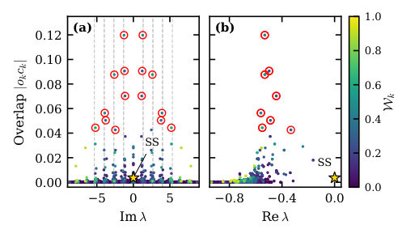
<figcaption class="paper-figure-caption"><b>Fig 1.</b> FIG. 1. Overlap spectrum |okck| of the Liouvillian eigenmodes with the N´eel state [Eq. (S5) of the Supplemental Material] for N = 14, γ+ = 0.2, γ−= 0.001, versus (a) Im λ and (b) Re λ. Each point is coloured by its scar-dyad weight Wk, Eq. (4), the overlap of the eigenmode with the γ± = 0 scar subspace. Red circles mark the N + 1 modes with the largest overlaps and the star the steady state (SS). Dashed lines in (a): bare scar- dyad frequencies Em −Em′ of the closed chain, for the dyads carrying closed-system N´eel weight |⟨Sm|Z2⟩|2|⟨Sm′|Z2⟩|2 ≥ 10−2. The modes forming the frequency tower are scar-like, carry most of the N´eel weight and decay more slowly than the bulk of the spectrum, so...</figcaption>
</figure>
<figure class="paper-figure-card">
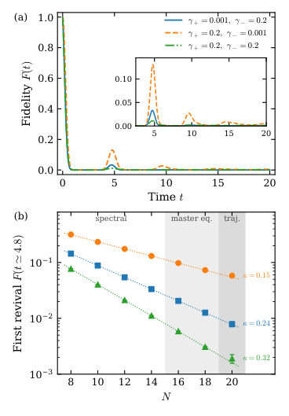
<figcaption class="paper-figure-caption"><b>Fig 2.</b> FIG. 2. (a) Fidelity F(t) with the N´eel state for N = 14 and three choices of the rates, from the Liouvillian spectrum. Inset: zoom on the revivals. Asymmetric rates (γ+ ̸= γ−) lead to an enhancement of the revivals, with the most pronounced effect observed when γ+ &gt; γ−. (b) Height of the first revival (t ≃4.8) versus system size, on a logarithmic scale, with the same colour code as in (a). Values for N ≤14 are obtained from the Liouvillian spectrum, for N = 16, 18 from the exact integration of the master equation (light shading) and for N = 20 from 2048 quantum trajectories (dark shading; error bars are one standard deviation). Dotted lines: fits F1 ∝e−κN</figcaption>
</figure>
<figure class="paper-figure-card">
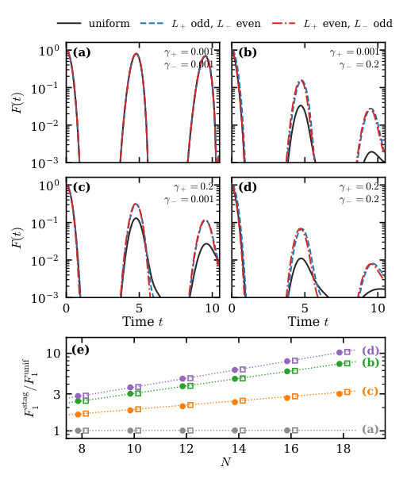
<figcaption class="paper-figure-caption"><b>Fig 3.</b> FIG. 3. Staggered versus uniform dissipation. (a)–(d) Fi- delity F(t) with the N´eel state |Z2⟩= |1010 · · · 10⟩for N = 14, for uniform dissipation (solid) and for staggered dissipation with L+ on the odd sites, which are excited in |Z2⟩, and L− on the even ones (dashed), or vice versa (dash-dotted). Stag- gering has no visible effect for weak dissipation (a), while for larger rates (b)–(d) it markedly enhances the revivals. (e) Ratio F stag 1 /F unif 1 of the first revival heights (t ≃4.8) versus N for the rates of panels (a)–(d) (filled circles: L+ on odd sites; open squares: L+ on even sites; slightly displaced hori- zontally), with exponential fits to the open squares (dotted). The...</figcaption>
</figure>
<figure class="paper-figure-card">
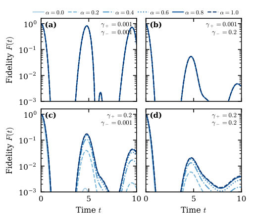
<figcaption class="paper-figure-caption"><b>Fig 4.</b> FIG. 4. Fidelity F(t) = ⟨Z2|ρ(t)|Z2⟩(logarithmic scale) for N = 12 with periodic boundary conditions, when the partial projector Pα replaces the projectors in the jump operators L±,j, while the PXP Hamiltonian retains the exact blockade. The rates are (a) γ+ = γ−= 0.001, (b) γ+ = 0.001, γ−= 0.2, (c) γ+ = 0.2, γ−= 0.001, (d) γ+ = γ−= 0.2. For small γ+ [(a), (b)] the curves for different α are indistinguishable, while for γ+ = 0.2 [(c), (d)] lowering α suppresses the revivals by up to two orders of magnitude: in (c) the first revival drops from F ≃0.18 at α = 1 to F ≃10−3 at α = 0.</figcaption>
</figure>
<figure class="paper-figure-card">
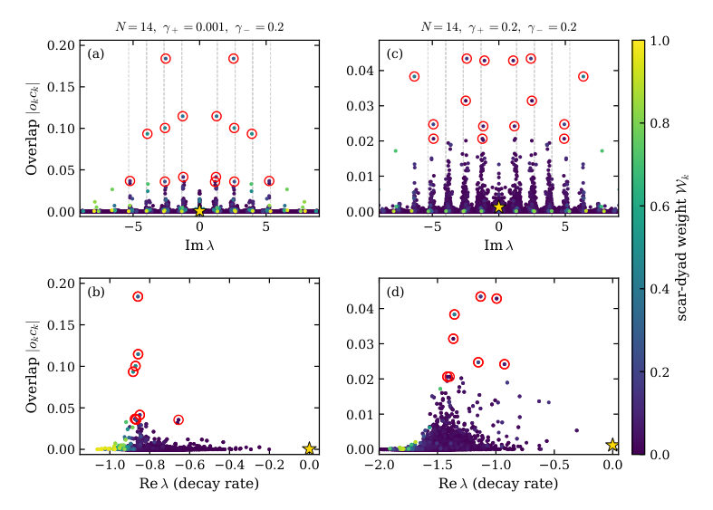
<figcaption class="paper-figure-caption"><b>Fig 5.</b> Fig. 1 of the main text shows the overlap spectrum for γ+ = 0.2, γ−= 0.001. The spectra for the other two choices of the rates considered in the main text are shown in Fig. S1, and Table S3 summarizes the three cases at N = 14. Notice that the symmetric case has twice the total rate of the other two.</figcaption>
</figure>
</div>

<p><strong>Summary.</strong> This paper analyzes the stability of quantum many-body scars in the PXP model under environmental dissipation. It shows that the preservation of scars requires the dissipation mechanism to respect the system's symmetries. Furthermore, the decay rate of quantum revivals is critically dependent on the asymmetry between gain and loss rates, demonstrating a clear mechanism for enhancing coherence through engineered dissipation.</p>
<p><strong>Why it may be interesting.</strong> This work directly addresses open quantum systems dynamics in highly interacting platforms like Rydberg arrays, providing quantitative rules for how dissipation affects fragile quantum coherence features like scars.</p>
<details>
<summary>Detailed structure</summary>
<p><strong>Main problem.</strong> The study investigates how quantum many-body scars (QMBS) survive and decay when the system is subjected to Markovian dissipation, particularly focusing on the role of symmetry in the dissipation process.</p>
<p><strong>Main result.</strong> The persistence of scars requires local jump operators to respect the Hamiltonian symmetries; furthermore, asymmetric dissipation rates ($\gamma_+ > \gamma_-$) enhance the revival fidelity and stabilize the scar dynamics.</p>
<p><strong>Method.</strong> The analysis relies on diagonalizing the full Liouvillian spectrum and calculating the Uhlmann fidelity $F(t)$ using the biorthonormal basis expansion.</p>
<p><strong>Model / system.</strong> The system is modeled using the PXP Hamiltonian, which simulates the nearest-neighbor blockade regime of Rydberg atom arrays. Dynamics are governed by a Lindblad master equation incorporating local jump operators.</p>
<p><strong>Key observables.</strong> Fidelity $F(t)$, Liouvillian eigenvalues ($\lambda$), scar-dyad weights ($W_k$), and the evolution of local observables like staggered magnetization $\langle Z 
angle$.</p>
<p><strong>Important parameters / regimes.</strong> Dissipation rates ($\gamma_+, \gamma_-$), the blockade parameter ($\alpha$), and system size ($N$).</p>
<p><strong>Assumptions / limitations.</strong> The analysis assumes the validity of the first-order rate approximation for decay rates and critically depends on the strict kinetic constraint imposed by the Rydberg blockade.</p>
<p><strong>Figures summary.</strong> Figures illustrate the overlap spectrum of eigenmodes with the Néel state, the decay of fidelity $F(t)$ under different dissipation schemes (staggered vs. uniform), and the evolution of local spin coherence.</p>
<p><strong>Paper structure.</strong> The paper systematically analyzes the Liouvillian spectrum, first establishing the scar tower in the closed system, then introducing dissipation, and finally comparing the decay rates and revival dynamics under symmetric, asymmetric, and symmetry-breaking dissipation conditions.</p>
</details>
<details>
<summary>Abstract</summary>
<p>We investigate the fate of quantum many-body scars in the PXP model subject to Markovian dissipation. We show that when local jump operators respect the same symmetries of the Hamiltonian the full Liouvillian spectrum displays a tower of states with properties analogous to standard quantum scars: large overlaps with Néel states and equally spaced gaps in the imaginary part of the eigenvalues, set by a single frequency. Whether the long-time dynamics is dominated by scars is determined by the real parts of the eigenvalues, which are set by the ratio between the two relaxation rates $γ_{\pm}$ describing spin flips down-to-up or up-to-down respectively. For asymmetric dissipation ($γ_+ > γ_-$) the scarred eigenvalues have the smallest real parts: the resulting enhanced fidelity oscillations are further stabilized by staggered jump operators. In contrast, replacing the full projection operator in the dissipators with a partial one breaks the symmetries of the problem and is seen to destroy dissipative scars altogether.</p>
</details>
<p><sub><a href="#top">↑ back to top</a></sub></p>

<p><a id="paper-2610.21556"></a></p>
<h3 id="finite-frequency-boson-number-bounds-across-the-quantum-rabi-transition">⭐ <a href="http://arxiv.org/abs/2610.21556v1">Finite-Frequency Boson-Number Bounds Across the Quantum Rabi Transition</a></h3>
<p><strong>Highlighted author(s):</strong> Michael Fleischhauer<br>
<strong>Authors:</strong> Razmik G. Unanyan, Michael Fleischhauer, Nikolay V. Vitanov<br>
<strong>Type:</strong> theory · <strong>Category:</strong> other · <strong>PDF:</strong> <a href="https://arxiv.org/pdf/2610.21556v1">https://arxiv.org/pdf/2610.21556v1</a><br>
<strong>Analysis basis:</strong> full PDF text, analyzed in chunks
<strong>Topic relevance:</strong> <code>Tavis-Cummings &amp; cavity-many-emitter</code> <strong>3/5</strong> · <code>analog quantum simulation</code> <strong>3/5</strong> · <code>Keldysh / 2PI / non-Gaussian methods</code> <strong>2/5</strong> · <code>driven-dissipative phase transition</code> <strong>1/5</strong> · <code>methods for driven-dissipative</code> <strong>1/5</strong> · <code>non-equilibrium universality</code> <strong>1/5</strong></p>
<div class="figure-strip-hint">↔ Scroll figures horizontally</div>
<div class="paper-figures-scroll">
<figure class="paper-figure-card">
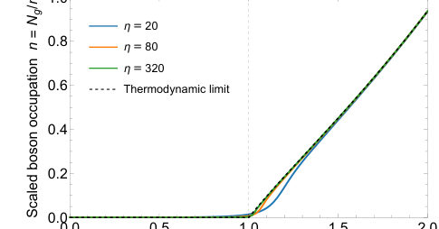
<figcaption class="paper-figure-caption"><b>Fig 1.</b> FIG. 2. Scaled occupation n = (ω0/Ω)Ng from exact diag- onalization for η = 20, 80, and 320. The dashed curve is the rigorous limiting result Eq. (74). The vertical line marks γ = 1.</figcaption>
</figure>
<figure class="paper-figure-card">
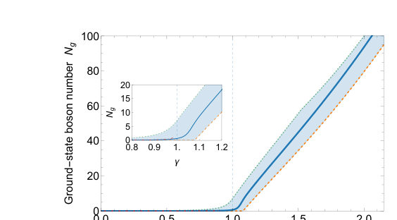
<figcaption class="paper-figure-caption"><b>Fig 2.</b> FIG. 1. Ground-state boson number Ng versus γ for η = Ω/ω0 = 100. The shaded region uses the energy-derived lower edge N (E) L and the final upper bound NU. The full rigorous lower bound is NL = max{N (E) L , N (R) L }; the resolvent contri- bution N (R) L from Eq. (31) is positive but too small to resolve on this scale. The solid line is exact diagonalization. The dash-dotted line shows the normal-phase squeezed-oscillator asymptotics, Eq. (23), away from the immediate critical re- gion. The inset magnifies the crossover near γ = 1.</figcaption>
</figure>
<figure class="paper-figure-card">
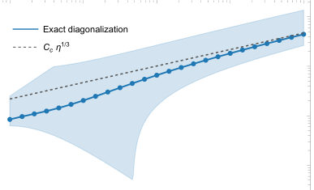
<figcaption class="paper-figure-caption"><b>Fig 3.</b> FIG. 3. Critical-point occupation Ng(γ = 1) versus η on logarithmic axes. Points connected by the solid line are exact diagonalization. The dashed line is the known asymptotic result Ccη1/3 from Ref. [20]. The shaded region is the refined rigorous interval obtained from Eqs. (62) and (66); its two endpoints have the same η1/3 scaling.</figcaption>
</figure>
</div>

<p><strong>Summary.</strong> This paper rigorously derives finite-frequency bounds for the boson occupation number and ground-state energy in the quantum Rabi model across its quantum phase transition. By establishing distinct scaling laws for the occupation number in the normal, critical, and superradiant regimes, it provides highly accurate, experimentally testable predictions for quantum simulation platforms like trapped ions.</p>
<p><strong>Why it may be interesting.</strong> This work provides precise, analytically derived bounds for a canonical model in quantum optics (QRM), directly yielding testable predictions for trapped-ion quantum simulators studying quantum phase transitions.</p>
<details>
<summary>Detailed structure</summary>
<p><strong>Main problem.</strong> The paper derives rigorous upper and lower bounds for the ground-state energy and the boson occupation number across the quantum Rabi transition for finite frequency ratios.</p>
<p><strong>Main result.</strong> It establishes distinct scaling behaviors for the boson occupation number ($N_g$) in the subcritical ($O(1)$), critical ($O(\eta^{1/3})$), and supercritical ($\propto \eta^{-2}$) regimes, providing experimentally testable inequalities.</p>
<p><strong>Method.</strong> The analysis employs variational principles, coherent-state bounds, and resolvent techniques applied to the quantum Rabi model Hamiltonian.</p>
<p><strong>Model / system.</strong> The system is the quantum Rabi model (QRM), describing a two-level system coupled to a bosonic mode, including counter-rotating terms. The Hamiltonian involves parameters $\Omega$ (splitting) and $\omega_0$ (boson frequency).</p>
<p><strong>Key observables.</strong> Ground-state energy ($E_g$) and boson occupation number ($N_g$).</p>
<p><strong>Important parameters / regimes.</strong> The dimensionless frequency ratio $\eta = \Omega/\omega_0$ and the coupling parameter $\gamma = 2g/\sqrt{\omega_0\Omega}$.</p>
<p><strong>Assumptions / limitations.</strong> The analysis is performed for the ideal QRM, and the derived bounds are shown to be applicable beyond the asymptotic (thermodynamic) limit.</p>
<p><strong>Paper structure.</strong> The paper develops from general energy bounds to specific, explicit finite-$\eta$ bounds for $N_g$, characterizing the behavior across the normal, critical, and superradiant regimes.</p>
</details>
<details>
<summary>Abstract</summary>
<p>We consider the quantum Rabi model, a fundamental model of quantum optics describing a two-level system coupled to a bosonic mode, including counter-rotating terms. In the limit of large separation between the two-level transition frequency and the bosonic mode frequency, the model exhibits a quantum phase transition at a critical coupling strength. Although the model is exactly solvable, simple analytic expressions for important physical quantities are generally unavailable. We derive rigorous upper and lower bounds for the ground-state energy and boson occupation number across the quantum phase transition at finite frequency ratios. Our results characterize the subcritical, critical, and supercritical regimes and establish the scaling behavior of the boson occupation near the critical point. Exact numerical diagonalization demonstrates the tightness of the derived bounds, while the resulting finite-frequency inequalities provide experimentally testable predictions for trapped-ion quantum simulators.</p>
</details>
<p><sub><a href="#top">↑ back to top</a></sub></p>

<p><a id="paper-2610.20724"></a></p>
<h3 id="long-lived-local-coherences-at-high-temperature-from-frozen-domain-walls">⭐ <a href="http://arxiv.org/abs/2610.20724v1">Long-lived local coherences at high temperature from frozen domain walls</a></h3>
<p><strong>Highlighted author(s):</strong> Sarang Gopalakrishnan<br>
<strong>Authors:</strong> Sarang Gopalakrishnan, Romain Vasseur<br>
<strong>Type:</strong> theory · <strong>Category:</strong> statistical mechanics · <strong>PDF:</strong> <a href="https://arxiv.org/pdf/2610.20724v1">https://arxiv.org/pdf/2610.20724v1</a><br>
<strong>Analysis basis:</strong> full PDF text, analyzed in chunks
<strong>Topic relevance:</strong> <code>scars &amp; prethermalization</code> <strong>3/5</strong> · <code>analog quantum simulation</code> <strong>2/5</strong></p>
<div class="figure-strip-hint">↔ Scroll figures horizontally</div>
<div class="paper-figures-scroll">
<figure class="paper-figure-card">
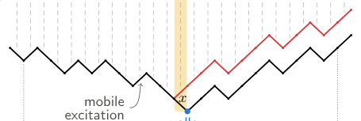
<figcaption class="paper-figure-caption"><b>Fig 1.</b> FIG. 1. Mechanism in the height representation h(i) = P</figcaption>
</figure>
<figure class="paper-figure-card">
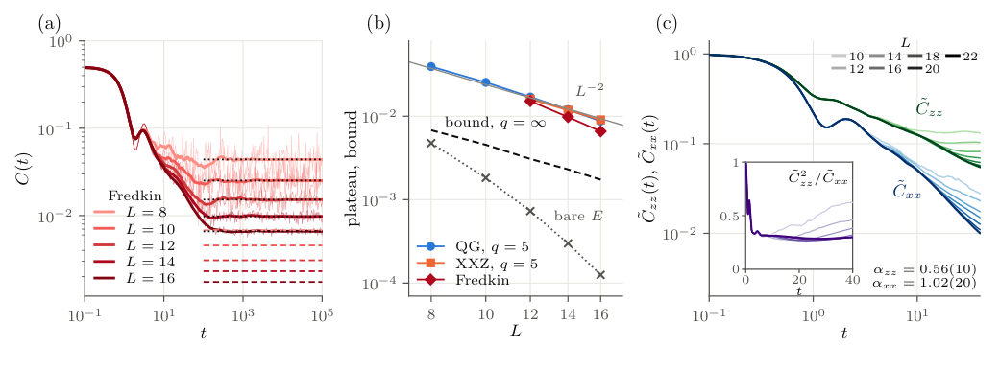
<figcaption class="paper-figure-caption"><b>Fig 2.</b> FIG. 2. Mazur bound and chaotic chains. (a) Transverse autocorrelator at the center of open Fredkin chains of L = 8–16 sites from full diagonalization (thin lines) and its time average 1</figcaption>
</figure>
<figure class="paper-figure-card">
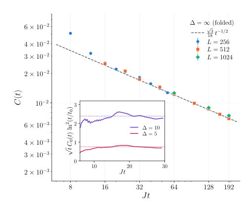
<figcaption class="paper-figure-caption"><b>Fig 3.</b> FIG. 3. Transverse correlator in the XXZ chain. The folded (∆= ∞) chain correlator, computed by unbiased Monte Carlo sampling of free-fermion Slater determinants using the results of Refs. [11, 37, 38] for open chains with L = 256, 512 and 1024 (up to 106 samples), compared with √</figcaption>
</figure>
<figure class="paper-figure-card">
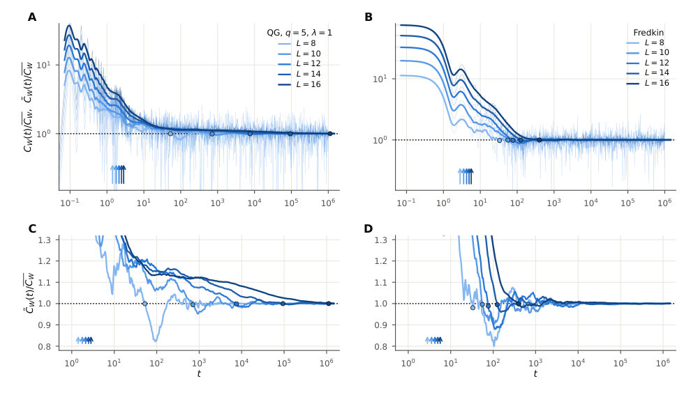
<figcaption class="paper-figure-caption"><b>Fig 4.</b> FIG. 1. Check of the non-undershoot assumption. (A) Quantum-group chain at q = 5, λ = 1: CW (t) (thin), ˜CW (t) (thick) and CW (dotted), normalized by CW . The interval average is plotted at √</figcaption>
</figure>
</div>

<p><strong>Summary.</strong> This paper analyzes the decay of local quantum coherences in spin chains, finding that quantum group symmetries enforce an anomalous, slow algebraic decay rate for the autocorrelation function. By deriving a Mazur bound and performing explicit calculations on models like the XXZ chain, the authors establish a fundamental constraint on how fast quantum memory can be lost in these systems.</p>
<p><strong>Why it may be interesting.</strong> The work provides a deep theoretical understanding of how underlying symmetries (quantum groups) can stabilize quantum correlations against thermal decoherence, which is crucial for understanding quantum dynamics in condensed matter systems.</p>
<details>
<summary>Detailed structure</summary>
<p><strong>Main problem.</strong> The paper investigates the anomalous persistence of local quantum coherences in chaotic many-body spin systems at high temperatures, where generic theory predicts rapid decay.</p>
<p><strong>Main result.</strong> The quantum group symmetry imposes a strict upper bound on the decay rate of the transverse spin autocorrelation function, showing it decays at most algebraically ($C(t) \gtrsim 1/t^2$).</p>
<p><strong>Method.</strong> The authors employ a Mazur bound derived from quantum-group symmetry, combined with locality and a 'non-undershoot' assumption, alongside explicit computations for specific spin chains.</p>
<p><strong>Model / system.</strong> The study focuses on local spin-1/2 chains, including the XXZ and Fredkin chains, whose dynamics are governed by Hamiltonians exhibiting quantum group $U_q(\mathfrak{sl}_2)$ symmetry.</p>
<p><strong>Key observables.</strong> Transverse spin autocorrelation function $C(t) \equiv \langle \sigma_{-}^x(t) \sigma_{+}^x(0)
angle$, and the moving-averaged correlators $ ilde{C}<em zz>{xx}(t)$ and $  ilde{C}</em>(t)$.</p>
<p><strong>Important parameters / regimes.</strong> Temperature (high T limit), anisotropy ($\Delta$), and the quantum group parameter $q$.</p>
<p><strong>Assumptions / limitations.</strong> The derivation of the Mazur bound relies on a physically motivated 'non-undershoot' assumption, and the analysis uses the 'height representation' formalism.</p>
<p><strong>Figures summary.</strong> Figures illustrate the mechanism in the height representation, compare autocorrelators for open Fredkin chains against the Mazur bound, and show the decay of correlators for the XXZ chain in different anisotropy limits.</p>
<p><strong>Paper structure.</strong> The paper progresses from establishing the general problem of coherence decay to deriving the Mazur bound using symmetry, followed by explicit calculations for the XXZ and Fredkin chains in various limits (e.g., large anisotropy, finite magnetization).</p>
</details>
<details>
<summary>Abstract</summary>
<p>Local coherences between distinct charge sectors--measured by the single-particle Green's function or the transverse spin autocorrelation function--do not overlap with hydrodynamic modes. At finite temperature, therefore, they decay faster than any power law in generic chaotic systems. We present a mechanism by which these coherences can persist anomalously long, for integrable and chaotic spin chains (including the XXZ and Fredkin spin chains) that obey a quantum group symmetry. We show--using a Mazur bound derived from the quantum-group symmetry, together with locality and a "non-undershoot" assumption--that the transverse spin autocorrelation function $C(t) \equiv \langle σ^-_x(t) σ^+_x(0)\rangle$ can decay at most algebraically: $C(t) \gtrsim 1/t^2$. This bound is not tight: in the large-anisotropy limit of the XXZ spin chain, at infinite temperature, we explicitly compute $C(t) \sim \sqrt{3}/(18 \sqrt{t})$. We also compute this decay rate in the XXZ spin chain for general easy-axis anisotropy, and estimate it to scale as $C(t) \sim t^{-2/z}$ (for transport exponent $z$) in the chaotic models.</p>
</details>
<p><sub><a href="#top">↑ back to top</a></sub></p>

<p><a id="paper-2610.22367"></a></p>
<h3 id="discovering-state-of-the-art-quantum-circuits-with-large-language-models">⭐ <a href="http://arxiv.org/abs/2610.22367v1">Discovering state-of-the-art quantum circuits with large language models</a></h3>
<p><strong>Highlighted author(s):</strong> Susanne F. Yelin, Mikhail D. Lukin<br>
<strong>Authors:</strong> Andi Gu, Alek H. Kemeny, Susanne F. Yelin, Mikhail D. Lukin<br>
<strong>Type:</strong> theory · <strong>Category:</strong> quantum information and computing · <strong>PDF:</strong> <a href="https://arxiv.org/pdf/2610.22367v1">https://arxiv.org/pdf/2610.22367v1</a><br>
<strong>Analysis basis:</strong> full PDF text, analyzed in chunks</p>
<div class="figure-strip-hint">↔ Scroll figures horizontally</div>
<div class="paper-figures-scroll">
<figure class="paper-figure-card">
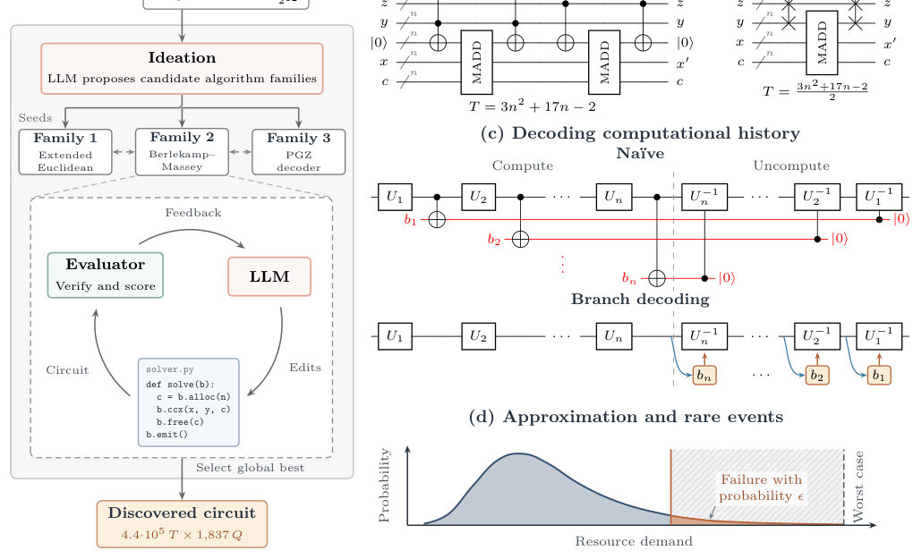
<figcaption class="paper-figure-caption"><b>Fig 1.</b> FIG. 1 Overview of the circuit-discovery framework. (a) A hand-written task specification defines the circuit design task (for example, Reed–Solomon decoding) and is given to an LLM. The LLM proposes architecturally different approaches (algorithm families; here extended Euclidean, Berlekamp–Massey, and Peterson–Gorenstein–Zierler (PGZ) decoders), which are then developed and optimized in parallel. Strong candidates are periodically shared between families to allow for cross-pollination of useful ideas. (b) Conditional routing reduces the cost of coherent control flow: for instance, two controlled multiply-adds (MADDs) become inexpensive controlled swaps and one shared arithmetic block. (c)...</figcaption>
</figure>
<figure class="paper-figure-card">
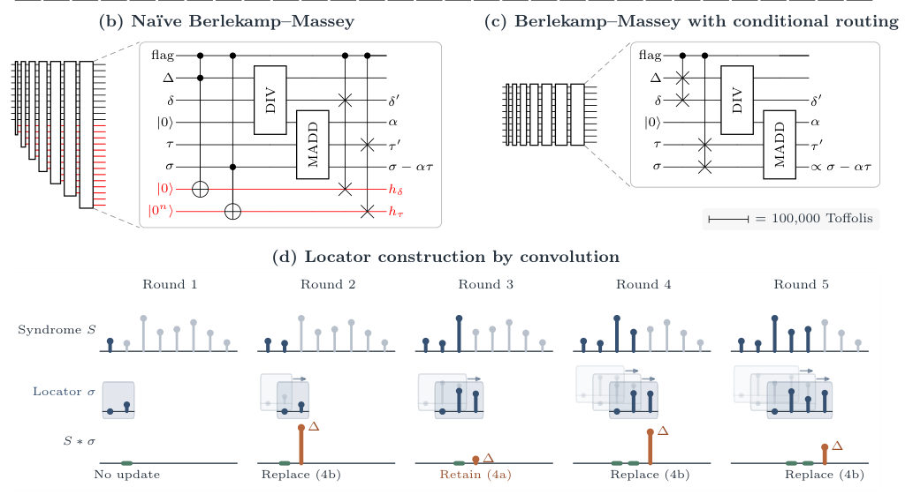
<figcaption class="paper-figure-caption"><b>Fig 2.</b> FIG. 2 Reversible Reed–Solomon decoding. (a) The synchronized extended-Euclidean construction of Khattar et al. [13] requires approximately 1.9 million Toffolis for the locator solve. (b) Berlekamp–Massey reduces this cost to approximately 140,000 Toffolis but naïvely accumulates intermediate information (red). DIV forms α = ∆/δ, MADD applies the multiply-add, and the flag marks the replace case. (c) Conditional routing preserves this arithmetic advantage while avoiding most history storage. Block widths are proportional to Toffoli count. (d) Locator construction as convolution with the syndrome sequence. The discrepancy ∆is the convolution at the next syndrome; a nonzero value requires...</figcaption>
</figure>
<figure class="paper-figure-card">
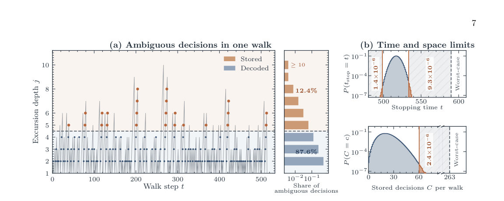
<figcaption class="paper-figure-caption"><b>Fig 3.</b> FIG. 3 Making divsteps reversible with minimal overhead. (a) Excursion depth j in one representative walk. Dots mark ambiguous decisions. We use a cutoff jstore = 5, so all ambiguous decisions with j ≥5 are stored rather than decoded. The histogram shows the distribution of excursion depths over uniformly sampled walks: only 12.4% of ambiguous decisions reach j ≥5. (b) Empirical stopping-time and history-size distributions. The discovered circuit assumes that every walk terminates between steps 499 and 533; this assumption fails with probability ∼10−5. It also allocates enough qubits to store at most 60 branch decisions, which is sufficient for all but a 2.4 × 10−6 fraction of walks.</figcaption>
</figure>
</div>

<p><strong>Summary.</strong> This paper presents a novel, AI-driven framework where Large Language Models co-design quantum circuits for complex problems. By integrating LLM proposal generation with an independent quantum circuit evaluator, the authors significantly optimized resource usage for tasks ranging from number theory to quantum simulation. This work opens a new avenue for algorithm discovery in quantum computation.</p>
<p><strong>Why it may be interesting.</strong> The methodology of using generative AI (LLMs) to guide the discovery of novel, resource-efficient quantum algorithms is a major development for quantum computing theory.</p>
<details>
<summary>Detailed structure</summary>
<p><strong>Main problem.</strong> Developing efficient, reversible quantum algorithms for complex tasks like arithmetic, decoding, and simulation, while overcoming the constraints of quantum computation.</p>
<p><strong>Main result.</strong> The authors introduced an LLM-guided evolutionary framework that successfully discovered quantum circuits significantly reducing resource costs (Toffoli gates and qubits) across diverse computational tasks.</p>
<p><strong>Method.</strong> They employed an evolutionary framework where Large Language Models propose circuit designs, which are then verified and scored by an independent evaluator, allowing for high-level structural revisions.</p>
<p><strong>Model / system.</strong> The focus is on quantum circuits designed to perform reversible computations, specifically addressing the constraints of reversibility and coherent control flow in quantum information processing.</p>
<p><strong>Key observables.</strong> Toffoli count (T), peak qubit count (Q), and the combined TQ-cost, used to benchmark circuit efficiency against state-of-the-art methods.</p>
<p><strong>Important parameters / regimes.</strong> The complexity of the task (e.g., modular inversion, Reed-Solomon decoding) and the resource budget (T and Q).</p>
<p><strong>Assumptions / limitations.</strong> The framework assumes that LLMs can propose novel, structurally sound circuit candidates that go beyond simple equivalence-preserving rewrites.</p>
<p><strong>Figures summary.</strong> Figures illustrate the discovery pipeline, showing how LLMs propose and the evaluator refines circuits for tasks like conditional routing and decoding computational history.</p>
<p><strong>Paper structure.</strong> The paper details the general LLM-guided optimization framework, followed by specific applications demonstrating improvements in Reed-Solomon decoding, modular inversion, and lattice gauge theory calculations.</p>
</details>
<details>
<summary>Abstract</summary>
<p>Significant efforts are currently being directed toward the implementation of large-scale quantum information processors, but realizing useful quantum advantage also requires the development of efficient quantum algorithms. While for many practical problems the dominant resource costs are associated with a small set of computational primitives, optimizing them in the quantum setting presents unique challenges, including a reversibility constraint absent from ordinary classical computation. Here we introduce an evolutionary framework in which large language models (LLMs) propose circuit designs and an independent evaluator verifies and scores them. We apply this framework to tasks spanning numerical computation, chemistry, optimization, quantum simulation, and number theory. In seven of the eight tasks, the discovered circuits significantly reduce both Toffoli and qubit counts relative to the state of the art. In the eighth, the search discovers a new reversible architecture for prime-field modular inversion. By handling reversibility differently, the architecture makes divsteps -- a classical algorithm previously impractical for reversible integer arithmetic -- viable and substantially improves the Toffoli-qubit trade-off for modular inversion. These results open the door for evaluator-guided LLM co-design of new algorithmic structures for quantum computation.</p>
</details>
<p><sub><a href="#top">↑ back to top</a></sub></p>

<p><a id="paper-2610.21465"></a></p>
<h3 id="periodic-conditional-measurements-on-a-photonic-chip"><a href="http://arxiv.org/abs/2610.21465v1">Periodic conditional measurements on a photonic chip</a></h3>
<p><strong>Authors:</strong> Xuan Chen, Ruo-Yu Yin, Xiao-Wen Shang, Xi-Jun Yuan, Ze-Feng Lan, Hong-Jing Du, Yi-Jun Chang, Bao-Jing Liu, Wen-Hao Zhou, Xi Tan, Eli Barkai, Hao Tang, Xian-Min Jin<br>
<strong>Type:</strong> experiment · <strong>Category:</strong> quantum information and computing · <strong>PDF:</strong> <a href="https://arxiv.org/pdf/2610.21465v1">https://arxiv.org/pdf/2610.21465v1</a><br>
<strong>Analysis basis:</strong> full PDF text, analyzed in chunks
<strong>Topic relevance:</strong> 🔥 <code>quantum measurements</code> <strong>5/5</strong> · 🔥 <code>Full counting statistics</code> <strong>4/5</strong> · 🔥 <code>QC/QI experiment</code> <strong>4/5</strong> · <code>analog quantum simulation</code> <strong>3/5</strong> · <code>driven-dissipative phase transition</code> <strong>3/5</strong> · <code>methods for driven-dissipative</code> <strong>3/5</strong> · <code>quantum optics experiment</code> <strong>3/5</strong> · <code>correlated / nonlocal dissipation</code> <strong>2/5</strong> · <code>non-equilibrium universality</code> <strong>2/5</strong> · <code>Keldysh / 2PI / non-Gaussian methods</code> <strong>1/5</strong> · <code>interference shaping light</code> <strong>1/5</strong></p>
<div class="figure-strip-hint">↔ Scroll figures horizontally</div>
<div class="paper-figures-scroll">
<figure class="paper-figure-card">
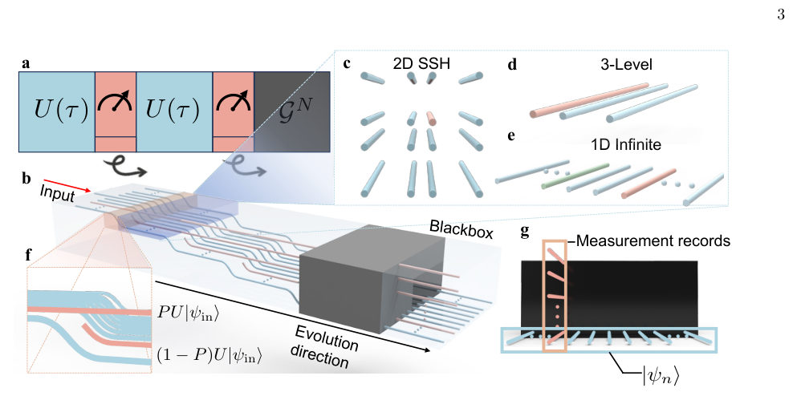
<figcaption class="paper-figure-caption"><b>Fig 1.</b> FIG. 1. a, Illustration of periodic conditional measurements. The coherent unitary evolution U(τ) is periodically interrupted by projective measurements, with the amplitude on the measured state removed from the system, thereby realizing conditional measurements. The n times repetition of this procedure is denoted by Gn. b, Snapshot of the photonic chip. The red waveguides represent the measured state and the blue waveguides represent the rest of the system. Each layer consists of an evolution phase (blue shaded area) followed by a conditional measurement (red shaded area) within a single period. The distance between two conditional measurements corresponds to the effective evolution...</figcaption>
</figure>
<figure class="paper-figure-card">
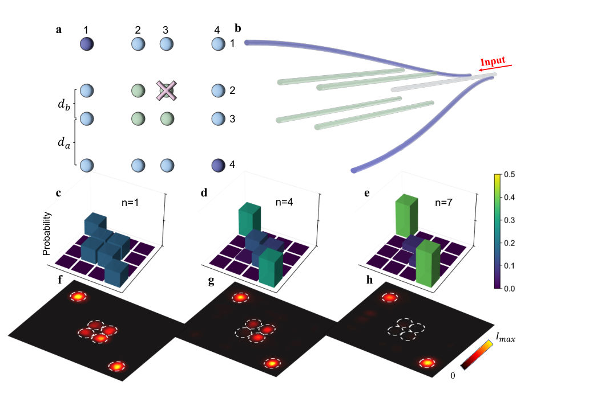
<figcaption class="paper-figure-caption"><b>Fig 2.</b> FIG. 2. a, Illustration of the 2D SSH lattice used in our experiment. The system contains 16 sequentially indexed sites. The intracell and intercell coupling strengths are determined by the waveguide separations da and db, respectively. The injection sites associated with the selected corner and bulk states are colored blue and green, respectively [see also Eq. (5)]. Periodic conditional measurements are performed on the state ∣2, 3⟩, which has a nonzero overlap with the input bulk state. b, Waveguide structure for input-state preparation. Light injected into the central waveguide sequentially passes through a 1 × 3 and a 1 × 4 coupler to generate the selected corner and bulk components,...</figcaption>
</figure>
<figure class="paper-figure-card">
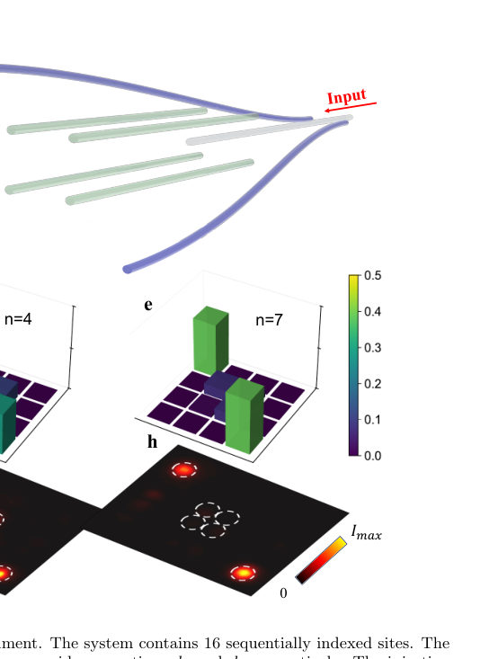
<figcaption class="paper-figure-caption"><b>Fig 3.</b> Fig. 3b shows the final energy of the system as a func- tion of Em/k and τ. The parameter space separates into two regions in which the final energy approaches either 4k, corresponding to ∣e⟩, or 0, corresponding to</figcaption>
</figure>
<figure class="paper-figure-card">
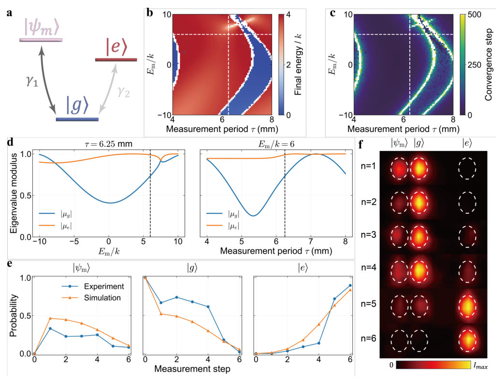
<figcaption class="paper-figure-caption"><b>Fig 4.</b> FIG. 3. a, Illustration of the three-level system. The ground state ∣g⟩is coupled to the measured state ∣ψm⟩with strength γ1 and to the excited state ∣e⟩with strength γ2. b,c, Final energy and convergence step as functions of the measured-state energy and measurement period. The final energy converges to either the ground- or excited-state energy. The boundary corresponds to nearly degenerate moduli of the two dominant eigenvalues, where the convergence step diverges. d, Moduli of the ∣g⟩- and ∣e⟩-dominated eigenvalues, ∣µg∣and ∣µe∣when: (i) fixing the measurement period at τ = 6.25 mm and scanning the measured-state energy, and (ii) fixing the measured-state energy at Em/k = 6 and scanning...</figcaption>
</figure>
<figure class="paper-figure-card">
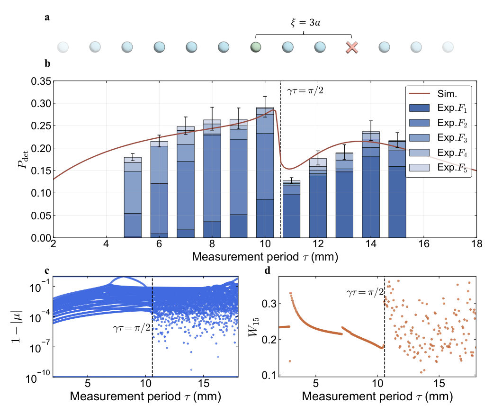
<figcaption class="paper-figure-caption"><b>Fig 5.</b> FIG. 4. a, Schematic of the monitored quantum walk on a one-dimensional chain. The walker is initialized at the central site colored green, while periodic conditional measurements are performed at a target site located three lattice constants away ξ = 3a with measurement period τ. b, Experimental total detection probability Pdet as a function of the measurement period. The stacked bars represent the contributions of the first five terms of the first-detection distribution first-detection probabilities from F1 to F5, and the red curve is the theoretical prediction. A sharp transition is observed around the critical measurement period γτ = π/2 (vertical dashed line), where the total detection...</figcaption>
</figure>
</div>

<p><strong>Summary.</strong> The research explores periodic conditional measurements on a photonic chip, showing how repeated measurements can be used to engineer quantum states. By analyzing the spectral properties of the measurement operator, the authors demonstrate selective state preservation (dark modes) or steering toward the longest-lived component (bright modes). This establishes a general framework for controlling quantum dynamics through measurement backaction.</p>
<p><strong>Why it may be interesting.</strong> This work provides a concrete, platform-specific realization of controlling quantum dynamics via measurement backaction, which is central to understanding open quantum systems and quantum control.</p>
<details>
<summary>Detailed structure</summary>
<p><strong>Main problem.</strong> The paper investigates how periodic conditional measurements reshape quantum evolution by repeatedly interrupting coherent evolution with local measurements.</p>
<p><strong>Main result.</strong> They established that periodic conditional measurements provide a unified spectral description for both the post-selected final state and the statistics of detection events, enabling programmable state engineering.</p>
<p><strong>Method.</strong> The analysis uses the biorthogonal eigenbasis of the conditional evolution operator G to distinguish between decaying 'bright modes' and persistent 'dark modes'.</p>
<p><strong>Model / system.</strong> The experiment is performed on a scalable, layer-structured three-dimensional photonic chip using photonic waveguide arrays. The dynamics are modeled by the conditional evolution operator G = (1 - P)U(tau).</p>
<p><strong>Key observables.</strong> Conditional final state (via dark/bright modes), first-detection probability distribution {F_n}, and total detection probability P_det.</p>
<p><strong>Important parameters / regimes.</strong> The measurement period $\tau$ is a key tunable parameter, which controls the spectral properties and the transition between different dynamical regimes.</p>
<p><strong>Assumptions / limitations.</strong> The analysis relies on the spectral decomposition of the conditional evolution operator G and compares results to the Quantum Zeno limit.</p>
<p><strong>Figures summary.</strong> Figures illustrate the schematic of the measurement process, the physical chip setup, and plots showing the dependence of detection probability and spectral weights on the measurement period $\tau$.</p>
<p><strong>Paper structure.</strong> The paper first introduces the theoretical framework of periodic conditional measurements, then demonstrates state engineering using photonic chips (e.g., protecting topological states), and finally analyzes the transition of the total detection probability as a function of the measurement period $\tau$.</p>
</details>
<details>
<summary>Abstract</summary>
<p>Quantum measurements not only extract information but also reshape quantum evolution through measurement backaction. Here, we investigate periodic conditional measurements, in which coherent evolution is repeatedly interrupted by local measurements. We show that the bright and dark modes of the conditional evolution operator provide a unified spectral description of both the post-selected final state along no-detection trajectories and the statistics of detection events. Using a three-dimensional photonic chip, we demonstrate on-demand state engineering through dark-mode preservation and bright-mode selection, enabling the protection of topological corner states and excited-state shelving. We further observe the predicted transition of the total detection probability on an effectively infinite one-dimensional lattice and identify its microscopic origin in Floquet near-dark modes. These results establish periodic conditional measurements as a general framework for engineering conditional quantum states and manipulating event-detection statistics in monitored quantum dynamics.</p>
</details>
<p><sub><a href="#top">↑ back to top</a></sub></p>

<p><a id="paper-2610.20889"></a></p>
<h3 id="a-rydberg-atom-array-coupled-to-a-high-cooperativity-optical-cavity"><a href="http://arxiv.org/abs/2610.20889v1">A Rydberg atom array coupled to a high-cooperativity optical cavity</a></h3>
<p><strong>Authors:</strong> Tai Xiang, Yue-Hui Lu, Tsai-Chen Lee, Jacquelyn Ho, Michael Lan, Zhenjie Yan, Harry Levine, Nathaniel B. Vilas, Dan M. Stamper-Kurn<br>
<strong>Type:</strong> experiment · <strong>Category:</strong> other · <strong>PDF:</strong> <a href="https://arxiv.org/pdf/2610.20889v1">https://arxiv.org/pdf/2610.20889v1</a><br>
<strong>Analysis basis:</strong> full PDF text, analyzed in chunks
<strong>Topic relevance:</strong> 🔥 <code>Rydberg arrays</code> <strong>5/5</strong> · 🔥 <code>Tavis-Cummings &amp; cavity-many-emitter</code> <strong>4/5</strong> · 🔥 <code>analog quantum simulation</code> <strong>4/5</strong> · <code>QC/QI experiment</code> <strong>3/5</strong> · <code>correlated / nonlocal dissipation</code> <strong>3/5</strong> · <code>quantum measurements</code> <strong>3/5</strong> · <code>quantum optics experiment</code> <strong>3/5</strong> · <code>Dicke superradiance</code> <strong>2/5</strong> · <code>driven-dissipative phase transition</code> <strong>1/5</strong> · <code>methods for driven-dissipative</code> <strong>1/5</strong> · <code>superradiant laser</code> <strong>1/5</strong></p>
<div class="figure-strip-hint">↔ Scroll figures horizontally</div>
<div class="paper-figures-scroll">
<figure class="paper-figure-card">
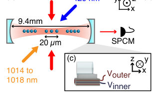
<figcaption class="paper-figure-caption"><b>Fig 1.</b> FIG. 1. Experimental platform. (a) A one-dimensional ar- ray of 87Rb atoms is positioned at the center and along the axis of a 1-cm-long near-concentric Fabry–Pérot cavity. The atoms are addressed by Rydberg-excitation and probe beams oriented at 45◦to one another and with wavelengths as shown. Cavity emission is detected with a single-photon counting module (SPCM). Up to three atoms at the cav- ity center are uniformly excited to Rydberg states, while an additional supply of atoms outside the excitation region is used to replenish depleted sites. (b) Atoms are driven on a two-photon transition from the |5S1/2, F = 2, mF = 2⟩ atomic ground state to |nS1/2, mJ = 1/2⟩Rydberg states (n between...</figcaption>
</figure>
<figure class="paper-figure-card">
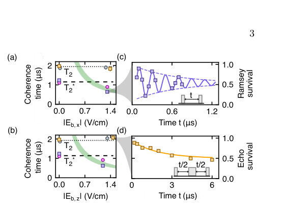
<figcaption class="paper-figure-caption"><b>Fig 2.</b> FIG. 3. Electric field noise and Rydberg coherence. (a,b) Ramsey (T ∗ 2 ) and spin-echo (T2) coherence times versus static electric field bias along the x (a) and z (b) axes, measured with (squares) and without (circles) the cavity actively stabi- lized. Green bands indicate the simulated Ramsey coherence time limited by only the measured electric-field noise σE un- der active cavity stabilization (see text). The shaded region reflects the uncertainty propagated from σE. Dashed and dot- ted lines are guides to the eye. Ramsey data taken without ac- tive stabilization are fitted using a maximum-likelihood model accounting for slow electric field drifts (see Supplemental Ma- terial [42]). (c)...</figcaption>
</figure>
<figure class="paper-figure-card">
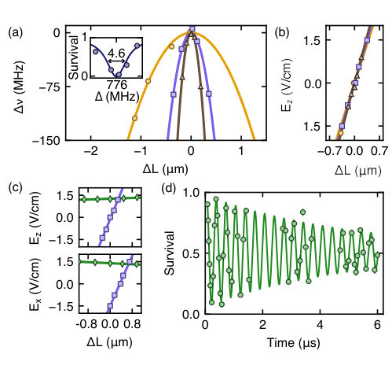
<figcaption class="paper-figure-caption"><b>Fig 3.</b> FIG. 2. Electric-field compensation and characterization. (a) Rydberg transition frequency shift, ∆ν, versus cavity-length displacement for n = 41 (circles), 53 (squares), and 60 (trian- gles), with parabolic fits (solid curves). Inset: representative Rydberg excitation spectrum with a Lorentzian fit. (b) Cor- responding electric fields inferred from ∆ν and the Rydberg state polarizabilities, with linear fits (solid lines). Symbols are the same as those in panel (a). The inferred electric field agrees across all three Rydberg states. (c) Electric fields along the x and z axes versus cavity-length displacement without (purple squares) and with (green diamonds) compensation. Solid lines are...</figcaption>
</figure>
<figure class="paper-figure-card">
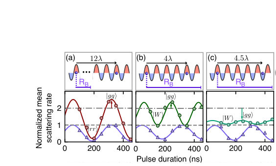
<figcaption class="paper-figure-caption"><b>Fig 4.</b> FIG. 5. Superradiant and subradiant cavity emission with Ry- dberg blockade. Single-atom Rydberg Rabi oscillations (pur- ple triangles) are compared with two-atom Rabi oscillations for three configurations. The mean scattering rate is nor- malized to the single-ground-state-atom rate of 0.42(2) µs−1; gray dash-dotted and dashed lines denote 1× and 2× the single-atom emission levels, respectively. (a) Unblockaded, superradiant configuration with R = 12 λ = 9.4 µm &gt; RB, where RB is the blockade radius, and g1 = g2. (b) Blockaded, superradiant configuration with R = 4 λ = 3.1 µm &lt; RB and g1 = g2. (c) Blockaded, subradiant configuration with R = 4.5 λ = 3.5 µm &lt; RB and g1 = −g2. Solid lines are...</figcaption>
</figure>
</div>

<p><strong>Summary.</strong> This paper reports on the coupling of a Rydberg atom array to a high-cooperativity optical cavity, overcoming significant challenges posed by stray electric fields from cavity actuators. The researchers demonstrated fast, nondestructive state readout and controlled collective light-atom scattering, paving the way for networked quantum processors and advanced quantum simulation.</p>
<p><strong>Why it may be interesting.</strong> This work represents a significant engineering and physics achievement in quantum simulation, showing how to build complex quantum devices by tackling real-world noise sources (actuator fields) while enabling advanced protocols like mid-circuit measurement and collective coupling.</p>
<details>
<summary>Detailed structure</summary>
<p><strong>Main problem.</strong> The primary challenge is integrating Rydberg-state control (local atom-atom interactions) with cavity control (photon-mediated long-range coupling) while mitigating decoherence caused by stray electric fields from cavity actuators.</p>
<p><strong>Main result.</strong> The authors successfully suppressed stray electric fields and demonstrated two key capabilities: fast, nondestructive ground-Rydberg state readout and controlled collective light-atom scattering via Rydberg-Rydberg interactions.</p>
<p><strong>Method.</strong> The work involves characterizing stray electric fields using frequency shifts, applying differential voltages for field compensation, and implementing advanced quantum control protocols like Purcell-enhanced fluorescence and driving blockaded Rabi oscillations.</p>
<p><strong>Model / system.</strong> The system is a Rydberg tweezer array of Rb atoms coupled to a high-cooperativity optical cavity. The physics involves coupling local Rydberg interactions with global cavity modes, operating in the single-atom strong-coupling regime.</p>
<p><strong>Key observables.</strong> Ground-Rydberg coherence times ($T_2^*$), Rabi oscillation frequencies ($\Omega$), fluorescence detection infidelity, and collective scattering rates (superradiant/subradiant).</p>
<p><strong>Important parameters / regimes.</strong> Cooperativity $C=3.0$; residual field variation limited to $\sim 3 	ext{ mV/cm rms}$; readout time $\le 7.5 \mu	ext{s}$.</p>
<p><strong>Assumptions / limitations.</strong> The coherence decay is modeled as arising from independent shot-to-shot Gaussian frequency fluctuations due to residual electric-field noise.</p>
<p><strong>Figures summary.</strong> Figures detail the experimental setup (Rydberg array coupled to a cavity), field characterization showing compensation voltages, and pulse sequences for state detection and interaction control.</p>
<p><strong>Paper structure.</strong> The paper systematically addresses field noise mitigation (characterization and compensation), followed by demonstrating advanced quantum operations: fast state readout, and finally, controlling collective light-atom scattering using Rydberg interactions.</p>
</details>
<details>
<summary>Abstract</summary>
<p>Integrating Rydberg-state control of atom-atom interactions with cavity control of atom-light interactions enables the combination of local entangling operations with photon-mediated long-range coupling, measurement, and communication. Such integration is challenging because electric fields generated by charges on cavity optics and by cavity-stabilizing actuators may disturb Rydberg-state coherence. Here, we couple a Rydberg tweezer array to a high-cooperativity optical cavity, suppressing the electric fields produced by cavity length actuation so that the residual field variation of about $3~\mathrm{mV/cm}$ rms does not limit Rydberg coherence. We demonstrate two capabilities that neither system provides alone. First, we use Purcell-enhanced fluorescence to read out atoms directly in the ground-Rydberg basis within $7.5~μ\mathrm{s}$, well within the Rydberg-state lifetime, with ground- and Rydberg-state detection infidelities of $3\%$ and $5\%$, respectively, and with low atom loss. Second, we use Rydberg-Rydberg interactions to control collective light-atom scattering into the cavity mode. Specifically, we drive blockaded Rabi oscillations between a state with two ground-state atoms, which scatter collectively with a superradiant or subradiant rate controlled by the atomic positions, and an entangled state with a single Rydberg excitation, which scatters like a single atom. These capabilities open routes toward networked Rydberg processors, mid-circuit measurements in analog quantum simulators, and many-body quantum optics with entangled emitters coupled collectively to light.</p>
</details>
<p><sub><a href="#top">↑ back to top</a></sub></p>

<p><a id="paper-2610.20712"></a></p>
<h3 id="surviving-readout-errors-and-incomplete-postselection-in-monitored-quantum-circuits"><a href="http://arxiv.org/abs/2610.20712v1">Surviving readout errors and incomplete postselection in monitored quantum circuits</a></h3>
<p><strong>Authors:</strong> Murtaza Ali Mir, Teemu Ojanen, Ali G. Moghaddam<br>
<strong>Type:</strong> theory · <strong>Category:</strong> statistical mechanics · <strong>PDF:</strong> <a href="https://arxiv.org/pdf/2610.20712v1">https://arxiv.org/pdf/2610.20712v1</a><br>
<strong>Analysis basis:</strong> full PDF text, analyzed in chunks
<strong>Topic relevance:</strong> 🔥 <code>quantum measurements</code> <strong>4/5</strong> · <code>Full counting statistics</code> <strong>3/5</strong> · <code>driven-dissipative phase transition</code> <strong>3/5</strong> · <code>methods for driven-dissipative</code> <strong>3/5</strong> · <code>correlated / nonlocal dissipation</code> <strong>2/5</strong> · <code>non-equilibrium universality</code> <strong>2/5</strong> · <code>Keldysh / 2PI / non-Gaussian methods</code> <strong>1/5</strong> · <code>analog quantum simulation</code> <strong>1/5</strong></p>
<div class="figure-strip-hint">↔ Scroll figures horizontally</div>
<div class="paper-figures-scroll">
<figure class="paper-figure-card">
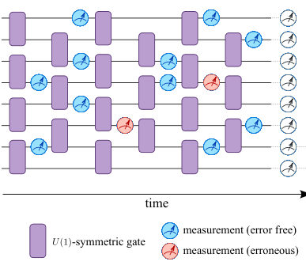
<figcaption class="paper-figure-caption"><b>Fig 1.</b> FIG. 1. Schematic of a U(1)-symmetric monitored circuit. Two-qubit gates (purple blocks) are drawn from the Haar measure restricted to U(1) charge-conserving unitaries. After each layer of gates, every qubit is measured independently with probability pm. Correctly recorded measurement out- comes are shown in blue, and outcomes affected by assign- ment (readout) errors are shown in red.</figcaption>
</figure>
<figure class="paper-figure-card">
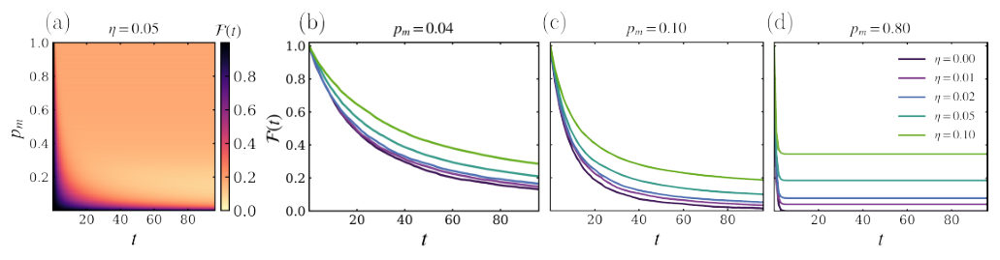
<figcaption class="paper-figure-caption"><b>Fig 2.</b> FIG. 2. Charge-fluctuation dynamics in the presence of readout error. (a) Heat map of the normalized charge fluctuation F(t) = δ2Q(t)/(L/4) as a function of time t and measurement rate pm, at fixed assignment error rate η = 5%. (b),(c),(d) Time evolution of F(t) for pm = 0.04, 0.1, 0.8, respectively. Ideal measurements suppress charge fluctuations efficiently, while finite assignment error leaves a residual long-time fluctuation. Nonetheless, the qualitative distinction between the two monitoring regimes persists in the presence of noise: F(t) decays slowly at low pm (b) and around the charge sharpening transition pm ∼0.1 (c), while it saturates rapidly to a finite plateau at high pm (d)....</figcaption>
</figure>
<figure class="paper-figure-card">
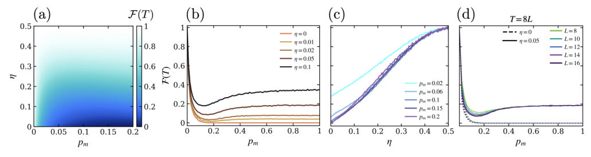
<figcaption class="paper-figure-caption"><b>Fig 3.</b> FIG. 3. Steady-state charge fluctuations in the presence of readout error. (a) Heat map of the normalized charge fluctuation F(T) at long time T = 8L, as a function of measurement rate pm (near the sharpening transition, pm ∼0.1) and error rate η. (b) Measurement-rate dependence of the fluctuations for various error strengths. (c) Growth of the fluctuations with error strength for various values of pm. Panels (a)–(c) are all for L = 12; panel (d) shows that other system sizes exhibit the same pattern, with only a slight decrease in the depth of the minimum with increasing size.</figcaption>
</figure>
<figure class="paper-figure-card">
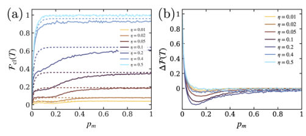
<figcaption class="paper-figure-caption"><b>Fig 4.</b> FIG. 4. Noise-induced mixing and its associated extra fluctuations. (a) The noise-induced (classical) contribution Fcl as a function of measurement rate pm, for different er- ror rates (solid lines); the reason for calling this term clas- sical is explained in the main text. Dashed lines show the corresponding prediction assuming uncorrelated errors, gov- erned by the Bernoulli noise-variance form (denoted Fapprox cl in the main text). (b) The residual fluctuation after sub- tracting the uncorrelated classical estimate from the total, ∆F = F −F approx cl . All the results are obtained for length L = 12.</figcaption>
</figure>
</div>

<p><strong>Summary.</strong> This paper analyzes how readout errors degrade the signature of measurement-induced phase transitions in monitored quantum circuits. By decomposing charge fluctuations, the authors show that the transition survives noise, leaving a measurable plateau and a characteristic minimum in the fluctuation spectrum. This provides a vital diagnostic tool for interpreting noisy experimental data from quantum measurement processes.</p>
<p><strong>Why it may be interesting.</strong> This work provides a quantitative and experimentally accessible method to detect fundamental quantum phase transitions in noisy, realistic quantum hardware settings, which is crucial for experimental quantum information science.</p>
<details>
<summary>Detailed structure</summary>
<p><strong>Main problem.</strong> The paper investigates how readout errors and incomplete postselection corrupt the dynamics and observable signatures of measurement-induced phase transitions (MIPTs) in monitored quantum circuits.</p>
<p><strong>Main result.</strong> The charge-sharpening transition survives finite readout error rates, manifesting as a finite steady-state plateau rather than vanishing fluctuations, and a shallow minimum in fluctuations signals the competition between purification and noise.</p>
<p><strong>Method.</strong> The analysis uses a quantum-trajectory framework, decomposing the charge fluctuations into quantum and classical contributions to isolate the effects of noise and memory.</p>
<p><strong>Model / system.</strong> The study focuses on U(1)-symmetric monitored quantum circuits, modeling the dynamics under the influence of imperfect measurement records (readout errors).</p>
<p><strong>Key observables.</strong> Charge fluctuations ($\delta^2Q$), normalized charge fluctuation $F(t)$, and the hybrid probe $\Delta F = F - F_{	ext{approx}}^{cl}$.</p>
<p><strong>Important parameters / regimes.</strong> Readout error rate ($\eta$), measurement rate ($p_m$), and the ideal transition point ($p_\#$).</p>
<p><strong>Assumptions / limitations.</strong> The primary assumption is that postselection is based on imperfectly recorded outcomes, leading to incomplete postselection.</p>
<p><strong>Figures summary.</strong> Figures illustrate the suppression of fluctuations in the ideal case versus the residual plateau at finite error rates, and show the three-regime structure of fluctuations versus measurement rate.</p>
<p><strong>Paper structure.</strong> The paper develops the theoretical framework by calculating the noisy ensemble density matrix $
ho_{    ilde{m}}$, separating the variance into quantum and classical parts, and then analyzing how the resulting fluctuations behave across different measurement rate regimes.</p>
</details>
<details>
<summary>Abstract</summary>
<p>We study how readout errors affect dynamics in monitored quantum circuits. Such errors make postselection effectively incomplete, conditioning trajectories on imperfect rather than true records. Focusing on U(1)-symmetric circuits, we find that the charge-sharpening transition survives at a finite error rate, with the sharp phase's vanishing fluctuations replaced by a finite steady-state plateau. The charge fluctuations show a shallow minimum near the ideal transition point as a function of measurement rate, signaling the competition between measurement-induced purification and noise-induced mixing. By decomposing the fluctuations into quantum and classical contributions, we show the minimum marks where incomplete postselection still retains enough trajectory memory to attenuate noise-induced mixing, leaving a detectable signature of the transition even in a noisy setting. Mid-circuit measurements are far harder to mitigate against readout errors than standard end-of-circuit ones, because the errors corrupt the postselection itself; the decomposition therefore offers a minimal mitigation framework and a route to locate the transition directly from experimental data. Our results show that charge sharpening survives readout errors in a quantitative and experimentally accessible way.</p>
</details>
<p><sub><a href="#top">↑ back to top</a></sub></p>

<p><a id="paper-2610.21909"></a></p>
<h3 id="looking-beyond-visibility-resolving-the-temporal-structure-of-continuous-wave-four-photon-hong-ou-mandel-interference"><a href="http://arxiv.org/abs/2610.21909v1">Looking Beyond Visibility: Resolving the Temporal Structure of Continuous-Wave Four-Photon Hong-Ou-Mandel Interference</a></h3>
<p><strong>Authors:</strong> Sabine Häussler, Meritxell Cabrejo-Ponce, Ana Maria Torres, Baghdasar Baghdasaryan, Karen Lozano-Mendéz, Fabian Steinlechner<br>
<strong>Type:</strong> experiment · <strong>Category:</strong> quantum information and computing · <strong>PDF:</strong> <a href="https://arxiv.org/pdf/2610.21909v1">https://arxiv.org/pdf/2610.21909v1</a><br>
<strong>Analysis basis:</strong> full PDF text, analyzed in chunks
<strong>Topic relevance:</strong> 🔥 <code>quantum optics experiment</code> <strong>4/5</strong> · <code>QC/QI experiment</code> <strong>3/5</strong> · <code>interference shaping light</code> <strong>3/5</strong> · <code>Full counting statistics</code> <strong>2/5</strong> · <code>quantum measurements</code> <strong>2/5</strong> · <code>methods for driven-dissipative</code> <strong>1/5</strong></p>
<div class="figure-strip-hint">↔ Scroll figures horizontally</div>
<div class="paper-figures-scroll">
<figure class="paper-figure-card">
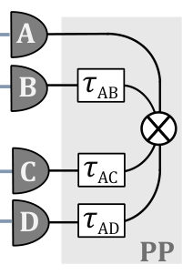
<figcaption class="paper-figure-caption"><b>Fig 1.</b> Fig. 1. Concept of asynchronous four-fold HOM interference with two long-coherence photon-pair sources: idler photons from sources S1 (magenta) and S2 (green) interfere at a beam splitter (BS), where they can be transmitted (T) or reflected (R). The temporal delays 𝜏AB, 𝜏AC and 𝜏AD of the optical channels can be analyzed after detection, in post-processing (PP), instead of physically delaying the photons before the BS.</figcaption>
</figure>
<figure class="paper-figure-card">
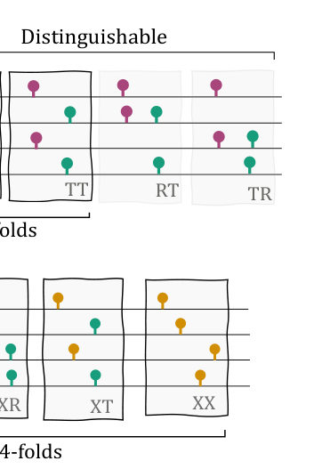
<figcaption class="paper-figure-caption"><b>Fig 2.</b> Fig. 2. Distribution of possible photon detections in a four-fold HOM experiment: photon pairs generated by two independent sources (magenta and green) arrive at the detection channels with temporal correlations. We distinguish between cases in which the four-fold events originate exclusively from one photon pair from each source (a), and cases in which they arise from uncorrelated photons (b). In (a), we label these events as reflected-transmitted (RT), transmitted-reflected (TR), reflected-reflected (RR) and transmitted-transmitted (TT) photon events. With temporal indistinguishabilty, the TR and RT cases cannot be resolved as two-photon-pair events when using click detectors. In...</figcaption>
</figure>
<figure class="paper-figure-card">
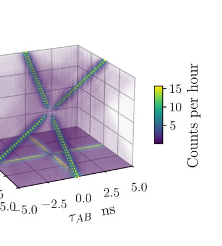
<figcaption class="paper-figure-caption"><b>Fig 3.</b> Fig. 3. Temporal 3D mapping of the modeled four-fold coincidence distribution. (a) Visualization of the relative temporal delays 𝜏AB = 𝑡B −𝑡A, 𝜏AC = 𝑡C −𝑡A, 𝜏AD = 𝑡D −𝑡A as defined across the four time tagging channels. (b) Simulated 3D histogram. Here, the four-fold events are distributed along two diagonal branches, corresponding to the correlation behaviour of the RR and TT events.</figcaption>
</figure>
<figure class="paper-figure-card">
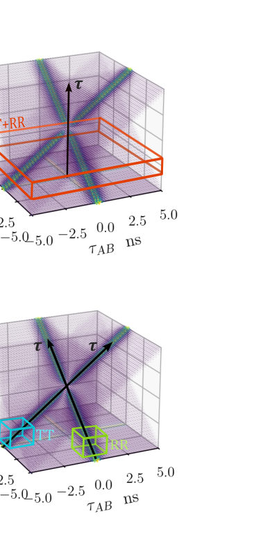
<figcaption class="paper-figure-caption"><b>Fig 4.</b> Fig. 4. Two different methods to scan HOM interference. Method 1 and Method 2 are depicted in the upper (a, b) and lower (c, d) rows, respectively. The first column (a, c) shows the distributions of detection times together with the trigger detection. The second column (b, d) illustrates the scan of the coincidence window and its corresponding dimensions for each method. In Method 1, the coincidence window (red box) is scanned along a delay 𝜏(black arrow). In Method 2 (lower row), the coincidence window is shifted in two channels, resulting in a small coincidence window being translated diagonally across the three-dimensional histogram.</figcaption>
</figure>
<figure class="paper-figure-card">
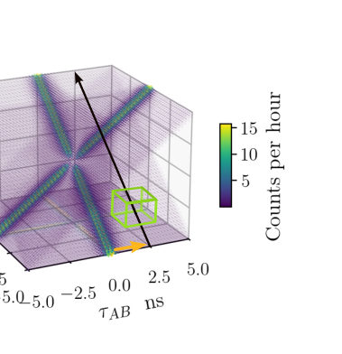
<figcaption class="paper-figure-caption"><b>Fig 5.</b> Fig. 5. Scheme of the accidental-scanning method, shown here as an example for XR events. One channel (here B) has an offset, while the delay of two other channels (here C and D) are scanned. Consequently, the coincidence window integrates XR-accidentals only. Similar procedures follow for the other accidental contributions. (a) for the delay across the four detection channels, (b) for scanning coincidences in the 3D histogram.</figcaption>
</figure>
</div>

<p><strong>Summary.</strong> This paper presents a novel method to characterize four-photon Hong-Ou-Mandel interference in continuous-wave sources by analyzing the full temporal structure in a three-dimensional coincidence histogram. Instead of relying on a single visibility average, the authors map relative arrival times to separate true quantum interference signals from background noise. This technique offers a general benchmark for optimizing quantum network protocols by explicitly managing the trade-off between measurement visibility and achievable count rate.</p>
<p><strong>Why it may be interesting.</strong> This work provides a crucial, advanced diagnostic tool for quantum network protocols, moving beyond simple visibility measurements to characterize the full temporal coherence structure of multi-photon sources.</p>
<details>
<summary>Detailed structure</summary>
<p><strong>Main problem.</strong> The paper addresses the limitation of characterizing Hong-Ou-Mandel (HOM) interference using only a single visibility parameter derived from averaging over fixed coincidence windows, especially for continuous-wave (CW) sources.</p>
<p><strong>Main result.</strong> By recording and analyzing all four photon arrival times in a 3D coincidence histogram, the authors resolve the underlying temporal structure, allowing for post-processed optimization of coincidence windows to trade off visibility against count rate.</p>
<p><strong>Method.</strong> The core method involves mapping four-fold coincidence events onto a 3D delay space using ultrafast time-resolved detection and post-processing techniques.</p>
<p><strong>Model / system.</strong> The experiment uses four-photon HOM interference generated via spontaneous four-wave mixing in microring resonators, involving two independent sources (S1 and S2) producing correlated photon pairs.</p>
<p><strong>Key observables.</strong> HOM Visibility ($V_{HOM}$), the full 3D coincidence histogram, and the count rate as a function of relative arrival-time delays ($\Delta	au_{AB}, \Delta	au_{AC}, \Delta	au_{AD}$).</p>
<p><strong>Important parameters / regimes.</strong> Coherence time ($   au_{coh}$), coincidence window sizes ($\Delta    au$), and the trade-off between visibility and count rate.</p>
<p><strong>Assumptions / limitations.</strong> The analysis assumes detection timing jitter is shorter than the coherence time, and the model separates true four-fold events from accidental background contributions.</p>
<p><strong>Figures summary.</strong> Figures illustrate the concept of 3D temporal mapping of four-fold interference, showing the two diagonal branches corresponding to true events (TT and RR) separated from the crossing planes representing accidental background events.</p>
<p><strong>Paper structure.</strong> The paper moves from identifying the inadequacy of single-parameter characterization to developing a full 3D temporal model, detailing the separation of true quantum interference signals from classical accidental coincidences, and finally demonstrating the optimization of measurement windows.</p>
</details>
<details>
<summary>Abstract</summary>
<p>Hong-Ou-Mandel interference underpins many photonic quantum information protocols and is commonly characterized by a single visibility parameter. This quantity is typically obtained by averaging over a fixed coincidence window, thereby discarding details of the underlying temporal structure that are critical in continuous-wave processes. Four-photon interference with continuous-wave sources furthermore requires photon pairs with long coherence times, which we generate in microring resonators and measure with ultrafast time-resolved detection. Here, we model and resolve their interference and temporal structure by recording all four photon arrival times and mapping their relative delays onto a three-dimensional coincidence histogram relative to a trigger detection. The resulting structure preserves relative arrival-time correlations that are usually discarded and enables post-processed optimization of coincidence windows to trade off visibility against count rate. This method provides a general benchmark for continuous-wave sources in interference-based quantum network protocols.</p>
</details>
<p><sub><a href="#top">↑ back to top</a></sub></p>

<p><a id="paper-2610.21684"></a></p>
<h3 id="quantum-instanton-approach-to-metastable-collective-spin-systems-numerical-implementation-and-applications"><a href="http://arxiv.org/abs/2610.21684v1">Quantum instanton approach to metastable collective spin systems: Numerical implementation and applications</a></h3>
<p><strong>Authors:</strong> Maciej Chudak, Massimiliano Esposito, Krzysztof Ptaszynski<br>
<strong>Type:</strong> theory · <strong>Category:</strong> statistical mechanics · <strong>PDF:</strong> <a href="https://arxiv.org/pdf/2610.21684v1">https://arxiv.org/pdf/2610.21684v1</a><br>
<strong>Analysis basis:</strong> full PDF text, analyzed in chunks
<strong>Topic relevance:</strong> 🔥 <code>driven-dissipative phase transition</code> <strong>4/5</strong> · 🔥 <code>methods for driven-dissipative</code> <strong>4/5</strong> · <code>non-equilibrium universality</code> <strong>3/5</strong> · <code>Keldysh / 2PI / non-Gaussian methods</code> <strong>2/5</strong> · <code>correlated / nonlocal dissipation</code> <strong>1/5</strong> · <code>scars &amp; prethermalization</code> <strong>1/5</strong></p>
<div class="figure-strip-hint">↔ Scroll figures horizontally</div>
<div class="paper-figures-scroll">
<figure class="paper-figure-card">
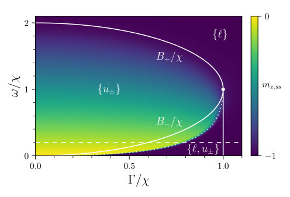
<figcaption class="paper-figure-caption"><b>Fig 1.</b> FIG. 1. Phase diagram of the LMG model. Solid lines sepa- rate regions with different sets of stable fixed points, indi- cated by the symbols in curly braces. In the coexistence region of ℓand u±, the dotted line denotes the first-order phase-transition line determined by the crossing of the acti- vation barriers, Aℓ→u± = Au±→ℓobtained using H representa- tion. The dashed line marks the parameter-space path used in Fig. 3. The color scale shows the steady-state magnetiza- tion mz,ss obtained from the master equation for J = 200.</figcaption>
</figure>
<figure class="paper-figure-card">

<figcaption class="paper-figure-caption"><b>Fig 2.</b> Figure 1 presents the phase diagram, illustrating the pa- rameter regions in which the above points are stable. As shown, the lower FP ℓloses stability in the region Γ/χ &lt; 1 and B−&lt; ω &lt; B+. The upper FPs u± are stable in the region Γ/χ &lt; 1 and ω &lt; B+. Our analysis will focus on the region Γ/χ &lt; 1 and ω &lt; B−, where both types of FPs are stable.</figcaption>
</figure>
<figure class="paper-figure-card">
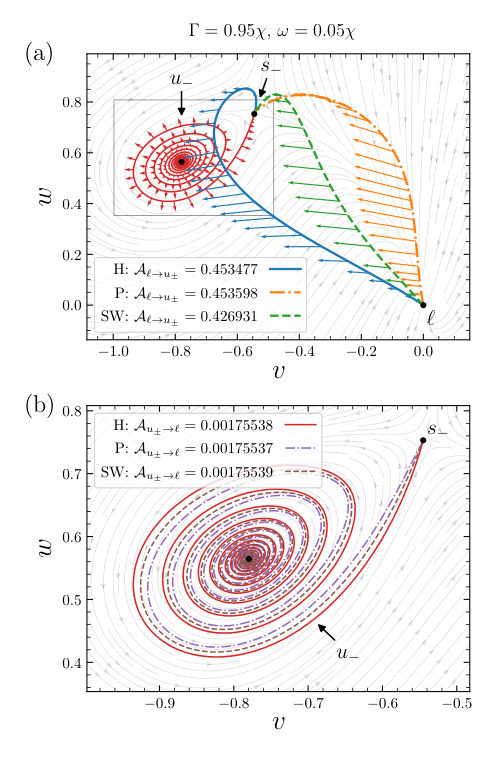
<figcaption class="paper-figure-caption"><b>Fig 3.</b> FIG. 2. Projections of the π ≠0 segments of instanton trajec- tories onto the (v, w) state plane for Γ = 0.95χ and ω = 0.05χ. (a) Three instanton trajectories connecting the fixed point ℓ to the saddle s−, obtained for different quasiprobability rep- resentations, together with a single trajectory connecting the fixed point u−to s−for the H representation. The arrows at- tached to the trajectories indicate the corresponding momen- tum vectors π. (b) Instanton trajectories connecting u−to s− for different representations, shown for the region indicated by the gray rectangle in panel (a). Momentum arrows are omit- ted in (b) for clarity. In both panels, the gray background lines with arrows...</figcaption>
</figure>
<figure class="paper-figure-card">
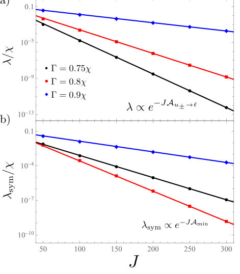
<figcaption class="paper-figure-caption"><b>Fig 4.</b> FIG. 4. (a) Dots: Liouvillian gap λ calculated using master equation for selected values of Γ, plotted in the logarithmic scale. Lines: the predicted scaling λ ∝exp(−JAu±→ℓ) set to cross the point for J = 300. (b) An analogous plot for the symmetric Liouvillian gap λsym, with lines representing the scaling λsym ∝exp(−JAmin).</figcaption>
</figure>
<figure class="paper-figure-card">
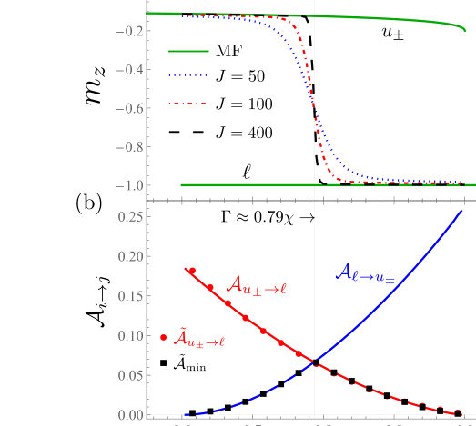
<figcaption class="paper-figure-caption"><b>Fig 5.</b> FIG. 3. (a) Mean-field (MF) fixed-point magnetization m∗ z (green solid lines) versus finite-size steady-state magnetiza- tion mz,ss obtained using master equation (other lines). (b) Activation barriers Ai→j calculated using H representation; they agree with the results obtained using P representation whenever the latter method converges. Grey vertical solid line at Γ ≈0.79χ denotes the crossing point of Aℓ→u± and Au±→ℓ curves. Symbols denote the estimators ˜ Au±→ℓand ˜ Amin de- fined by Eq. (18). Parameter ω = 0.2χ.</figcaption>
</figure>
</div>

<p><strong>Summary.</strong> This paper develops and numerically implements the quantum instanton approach to study slow relaxation and first-order phase transitions in collective spin systems. By calculating the activation barriers for switching between metastable states in models like LMG and CRF, the authors predict key physical observables, validating the method against established quantum master equation results.</p>
<p><strong>Why it may be interesting.</strong> This work provides a powerful, systematic tool (quantum instantons) to calculate non-perturbative rates and phase transition boundaries in complex, open quantum systems, bridging quantum dynamics with classical rate theories.</p>
<details>
<summary>Detailed structure</summary>
<p><strong>Main problem.</strong> The paper addresses the slow relaxation and first-order dissipative phase transitions occurring in driven-dissipative collective spin systems due to rare switching between metastable states.</p>
<p><strong>Main result.</strong> The quantum instanton framework successfully predicts the stationary magnetization, the critical point for first-order transitions, and the exponential scaling of slow relaxation rates for tested models.</p>
<p><strong>Method.</strong> It employs the quantum instanton approach, numerically implemented using collocation and shooting methods, to calculate the activation barriers governing the switching rates between metastable attractors.</p>
<p><strong>Model / system.</strong> The study applies the framework to two microscopically motivated systems: the Lipkin-Meshkov-Glick (LMG) model and the Cooperative Resonance Fluorescence (CRF) model, both involving collective spin dynamics under dissipation.</p>
<p><strong>Key observables.</strong> Switching rates ($\kappa_{i	o j}$), activation barriers ($A_{i	o j}$), stationary magnetization, and the first-order dissipative phase-transition point.</p>
<p><strong>Important parameters / regimes.</strong> Dissipation rates ($\Gamma$), coupling strengths ($\chi$), and system parameters defining the specific models (LMG, CRF).</p>
<p><strong>Assumptions / limitations.</strong> The analysis relies on the large-system limit ($V 	o \infty$) and assumes the instanton trajectory can be found by solving Hamilton's equations, though limitations regarding non-convex Hamiltonians and the accuracy of the Wigner approach are noted.</p>
<p><strong>Figures summary.</strong> Figures illustrate projections of instanton trajectories onto phase planes for different quasiprobability representations, showing the paths connecting stable fixed points via saddle points.</p>
<p><strong>Paper structure.</strong> The paper develops the quantum instanton framework, details its numerical implementation using collocation/shooting methods, and then applies this machinery to calculate key physical quantities (rates, barriers) for the LMG and CRF models, comparing results against master equation calculations.</p>
</details>
<details>
<summary>Abstract</summary>
<p>Driven-dissipative collective spin systems can host several long-lived metastable states; rare switching between them governs slow relaxation and first-order dissipative phase transitions associated with changes in the dominant stationary state. In the companion Letter [arXiv:2604.15091], we introduced a quantum instanton framework based on exact quasiprobability dynamics to describe this switching and illustrated it with a minimal model possessing a simplifying symmetry. Here we develop its numerical implementation, combining collocation and shooting methods, and apply it to two microscopically motivated systems: the Lipkin-Meshkov-Glick model with purely collective dissipation and the cooperative resonance fluorescence with collective and local dissipation. By determining the leading exponential scaling of switching rates between metastable attractors, we predict the stationary magnetization, the first-order dissipative phase-transition point, and the exponential scaling of slow relaxation rates. These predictions agree with quantum master-equation calculations and an exact analytical result for the second model without dephasing. We also examine how the choice of quasiprobability representation affects numerical convergence and find that the alternative semiclassical Wigner approach, based on Gaussian truncation, has varying accuracy across models and parameter regimes. These results substantiate the framework's applicability to experimentally relevant collective spin systems with both collective and local dissipation.</p>
</details>
<p><sub><a href="#top">↑ back to top</a></sub></p>

<p><a id="paper-2610.20723"></a></p>
<h3 id="boundary-induced-geometrical-frustration-in-a-square-rydberg-atom-lattice"><a href="http://arxiv.org/abs/2610.20723v1">Boundary-induced geometrical frustration in a square Rydberg-atom lattice</a></h3>
<p><strong>Authors:</strong> Marco Rigobello, Luka Pavešić, Daniel Jaschke, Pietro Silvi, Marco Di Liberto, Simone Montangero, Simone Notarnicola<br>
<strong>Type:</strong> both · <strong>Category:</strong> other · <strong>PDF:</strong> <a href="https://arxiv.org/pdf/2610.20723v1">https://arxiv.org/pdf/2610.20723v1</a><br>
<strong>Analysis basis:</strong> full PDF text, analyzed in chunks
<strong>Topic relevance:</strong> 🔥 <code>Rydberg arrays</code> <strong>4/5</strong> · 🔥 <code>analog quantum simulation</code> <strong>4/5</strong> · <code>methods for driven-dissipative</code> <strong>3/5</strong> · <code>QC/QI experiment</code> <strong>2/5</strong></p>
<div class="figure-strip-hint">↔ Scroll figures horizontally</div>
<div class="paper-figures-scroll">
<figure class="paper-figure-card">
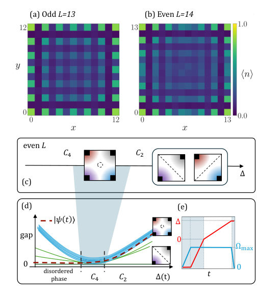
<figcaption class="paper-figure-caption"><b>Fig 1.</b> FIG. 1: (a)–(b) Experimental Rydberg excitation density ⟨n⟩measured after the ramp at final detuning ∆= 2.0. For the odd-sized array (L = 13), the boundary condi- tions are compatible with a single striated domain. For the even-sized array (L = 14), the four corners seed incompatible striated patterns, generating a geometri- cal defect in the bulk. (c) Boundary-induced frustrated regimes for even L. As the detuning ∆is increased, the system enters a globally C4-symmetric frustrated regime, with four striated domains related by π/2 rotations. At larger ∆, the ground state becomes the superposition of two C2-invariant configurations with a one-dimensional diagonal defect. (d) Schematic...</figcaption>
</figure>
<figure class="paper-figure-card">
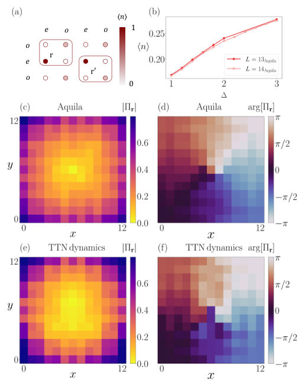
<figcaption class="paper-figure-caption"><b>Fig 2.</b> FIG. 2: (a) Computation of Πr on a plaquette, where r is the bottom-left site. The parameter Πr depends on the four local densities in the plaquette, taken according to the parity of their coordinates. (b) Experimentally measured Rydberg excitation density ⟨n⟩as a function of the final detuning ∆. The agreement between the results for L = 13 and L = 14 shows that the total density does not depend strongly on the parity of L. (c)–(f) Modulus and phase of Πr for L = 14 at ∆= 2.0, obtained from the experimental data (c,d) and with TTN dynamics (e,f). The agreement between the two shows that the ramp dynamics captures the formation of the four boundary domains and the suppression of local...</figcaption>
</figure>
<figure class="paper-figure-card">
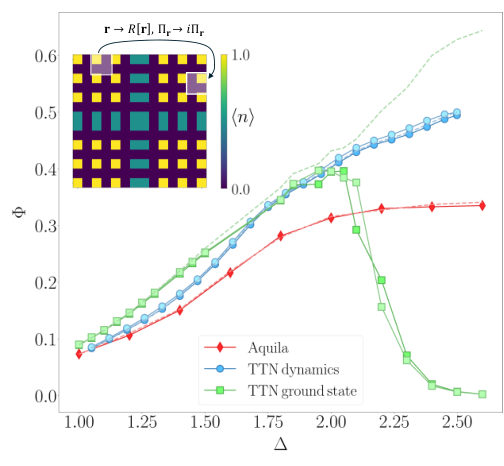
<figcaption class="paper-figure-caption"><b>Fig 3.</b> FIG. 3: Rotational correlator Φ computed for L = 14 as a function of the final detuning ∆. We compare the experimental results obtained with Aquila (red di- amonds), real-time TTN dynamics (blue circles), and TTN ground-state calculations (green squares). The dashed lines show Π2 for each case in the same color. For the experimental data, we estimated statistical errors via bootstrap sampling, obtaining errors ∼10−3. For nu- merical simulations, darker shades correspond to larger bond dimensions. For the dynamical simulations, differ- ent shades correspond to bond dimensions m = 100, 150, while for the ground-state calculations they correspond to m = 200, 250. For the ground-state...</figcaption>
</figure>
<figure class="paper-figure-card">
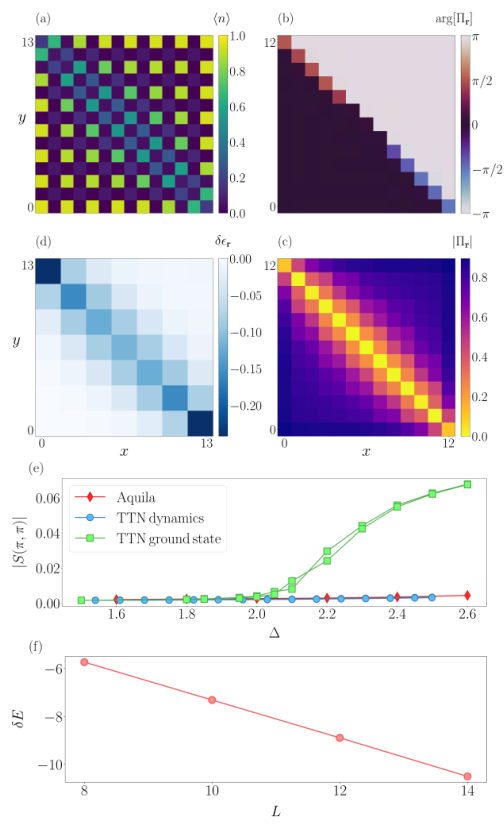
<figcaption class="paper-figure-caption"><b>Fig 4.</b> FIG. 4: Ground state C2 structure at ∆= 2.5. (a) Local Rydberg density ⟨nr⟩, showing two striated domains nu- cleated by two opposite corners separated by a diagonal interface. (b) Phase of the complex plaquette order pa- rameter Πr. (c) Modulus |Πr|, whose suppression along the diagonal marks the localized geometrical defect. (d) Plaquette-averaged local energy density ⟨δϵr⟩, showing that the energy gain is concentrated along the diagonal interface. (e) The structure factor S(π, π) computed as a function of ∆. In the ground state (green squares), it increases from zero at ∆≃2.0, signaling the diagonal- defect regime. In the evolved state computed with TDVP simulations (blue circles) and in...</figcaption>
</figure>
<figure class="paper-figure-card">
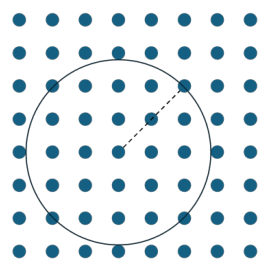
<figcaption class="paper-figure-caption"><b>Fig 5.</b> FIG. 5: Sketch of the interaction range we retain in nu- merical simulations.</figcaption>
</figure>
</div>

<p><strong>Summary.</strong> This paper explores how the geometry and size of a Rydberg-atom lattice dictate its global quantum order, revealing frustration effects based on lattice parity. By comparing experimental measurements with tensor-network simulations, the authors map out transitions between $C_4$-symmetric and $C_2$-symmetric ordered states. It highlights the crucial role of boundaries in stabilizing specific defect patterns in programmable quantum matter.</p>
<p><strong>Why it may be interesting.</strong> This work provides a detailed, experimentally relevant platform (Rydberg arrays) to study fundamental concepts of geometric frustration, symmetry breaking, and boundary effects in quantum many-body systems.</p>
<details>
<summary>Detailed structure</summary>
<p><strong>Main problem.</strong> The study investigates how lattice size parity and boundary conditions induce geometrical frustration and determine the global ordering in programmable quantum matter.</p>
<p><strong>Main result.</strong> The system exhibits distinct ordered phases depending on lattice size and detuning, transitioning from a $C_4$-symmetric state to a $C_2$-symmetric state characterized by a diagonal defect.</p>
<p><strong>Method.</strong> The research combines experimental protocols on the Aquila quantum processor with advanced numerical simulations like DMRG and TDVP using tensor networks.</p>
<p><strong>Model / system.</strong> The system is a square lattice of Rydberg atoms, modeled by an effective spin-1/2 Hamiltonian involving Rydberg excitation number operators and long-range dipole-dipole interactions.</p>
<p><strong>Key observables.</strong> Plaquette order parameter ($\Pi_r$), boundary rotational correlator ($\Phi$), and the staggered magnetization proxy ($S(\pi, \pi)$).</p>
<p><strong>Important parameters / regimes.</strong> Lattice size parity (odd vs. even), detuning ($\Delta$), and interaction strength ($V_{rr'}$).</p>
<p><strong>Assumptions / limitations.</strong> The experimental ramp protocol may not reach the highest detuning regimes simulated, and larger simulations might artificially break true $C_4$ symmetry.</p>
<p><strong>Figures summary.</strong> Figures illustrate the density profile ($\langle n 
angle$) for odd/even lattices, the plaquette order parameter ($\Pi_r$) showing defect formation, and the structure factor $S(\pi, \pi)$ confirming symmetry changes with detuning.</p>
<p><strong>Paper structure.</strong> The paper systematically analyzes the ground state and dynamics across different detuning regimes, contrasting the effects of lattice size parity (odd vs. even) on the resulting global order and defect structure.</p>
</details>
<details>
<summary>Abstract</summary>
<p>We study geometric defects in square-lattice Rydberg-atom arrays induced by lattice-size parity in the striated density-wave phase. While odd-sized lattices select a single striated domain, even-sized lattices seed incompatible domains at the four corners, resulting in a π/2-rotation invariant state with a geometrical defect emanating from the lattice center. At larger detunings, we instead identify a π-rotation-invariant state with two domains nucleated by opposite corners and separated by a one-dimensional diagonal defect. We probe the state-preparation protocol on the Aquila atomic quantum processor and benchmark it with equilibrium and real-time dynamics tensor-network simulations. Our results assess the role of boundaries and lattice size in determining the global ordering in programmable quantum matter.</p>
</details>
<p><sub><a href="#top">↑ back to top</a></sub></p>

<p><a id="paper-2610.22023"></a></p>
<h3 id="loss-independent-time-delay-estimation-via-hong-ou-mandel-photon-bunching-detection"><a href="http://arxiv.org/abs/2610.22023v1">Loss-independent time-delay estimation via Hong-Ou-Mandel photon bunching detection</a></h3>
<p><strong>Authors:</strong> Julián Defant, Agustina G. Magnoni, Miguel A. Larotonda, Laura T. Knoll<br>
<strong>Type:</strong> both · <strong>Category:</strong> other · <strong>PDF:</strong> <a href="https://arxiv.org/pdf/2610.22023v1">https://arxiv.org/pdf/2610.22023v1</a><br>
<strong>Analysis basis:</strong> full PDF text, analyzed in chunks
<strong>Topic relevance:</strong> 🔥 <code>quantum optics experiment</code> <strong>4/5</strong> · <code>interference shaping light</code> <strong>3/5</strong> · <code>quantum measurements</code> <strong>3/5</strong> · <code>Full counting statistics</code> <strong>2/5</strong></p>
<div class="figure-strip-hint">↔ Scroll figures horizontally</div>
<div class="paper-figures-scroll">
<figure class="paper-figure-card">
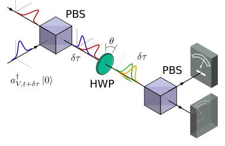
<figcaption class="paper-figure-caption"><b>Fig 1.</b> Figure 1. Schematic configuration of a standard polarization- based Hong-Ou-Mandel interferometer for time-delay estima- tion.</figcaption>
</figure>
<figure class="paper-figure-card">
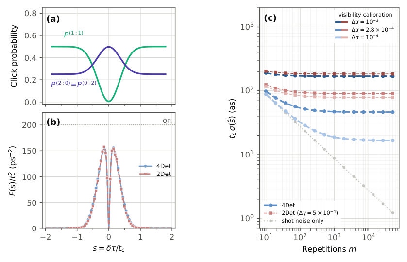
<figcaption class="paper-figure-caption"><b>Fig 2.</b> Figure 2. (a) Theoretical probability distributions for coincidence (P (1:1)) and bunching (P (2:0), P (0:2)) events as functions of s = δτ</figcaption>
</figure>
<figure class="paper-figure-card">
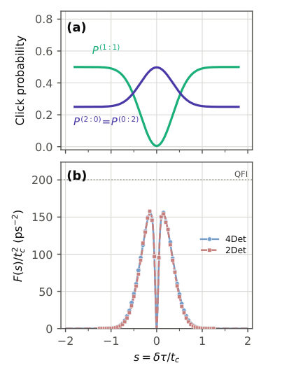
<figcaption class="paper-figure-caption"><b>Fig 3.</b> Figure 2(b) shows the simulated Fisher information for both schemes, together with the theoretical predictions calculated using Eq. (4) and the corresponding proba- bility distributions. The parameters were fixed from the experimental conditions: the interference visibility was obtained from the coincidence dip (α = 0.99, correspond- ing to δλ ≈0.7 nm), the coherence time from the width of the HOM dip (tc = 0.2 ps), and the photon loss rate of the system is γ = 0.88. In both cases the variance of the estimator saturates the Cramér–Rao bound, so each scheme attains the maximum precision allowed by its own statistics. Note that the Fisher information vanishes at the indistinguishability...</figcaption>
</figure>
<figure class="paper-figure-card">
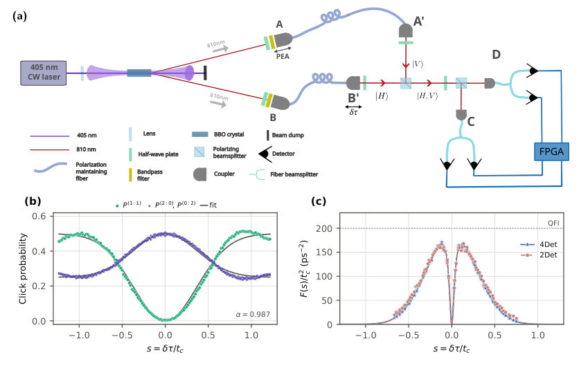
<figcaption class="paper-figure-caption"><b>Fig 4.</b> Figure 3. (a) Schematic setup of the Hong-Ou-Mandel polarization interferometer. Photon pairs at 810 nm are generated via SPDC using a CW 405 nm pump. After spectral filtering, photons are coupled into PMFs and redirected to the interferometer with orthogonal polarizations, where a PBS overlaps their paths. To scan the interference pattern, one of the fiber couplers is mounted on a motorized micrometer stage, enabling control over the relative delay between the photon pair. Interference is produced by an arrangement of a HWP followed by a second PBS, which separates the polarization components into different paths leading to the detection scheme. Each path is coupled to a FBS that divides...</figcaption>
</figure>
<figure class="paper-figure-card">
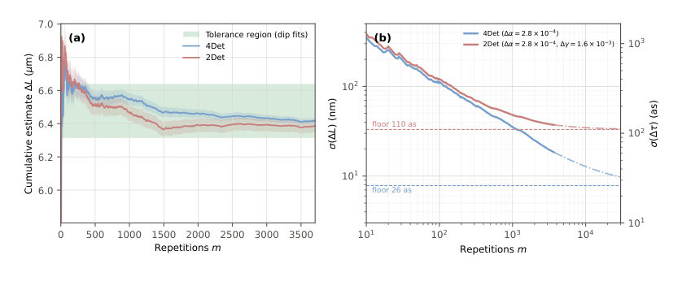
<figcaption class="paper-figure-caption"><b>Fig 5.</b> Figure 4. (a) Cumulative mean of the estimation of the path difference introduced by the piezoelectric actuator over repetitions for the two-detector scheme (red) and four-detector scheme (blue). (b) Cumulative dispersion of the path difference estimation over repetitions for the two-detector scheme (red) and four-detector scheme (blue). Horizontal dashed lines represent the dispersion floor set by the considered calibration uncertainty of the systematic parameters for each configuration.</figcaption>
</figure>
</div>

<p><strong>Summary.</strong> This paper demonstrates a method for highly precise time-delay estimation using entangled photon pairs in a Hong-Ou-Mandel interferometer. By implementing a four-detector measurement scheme that analyzes photon bunching, the authors achieve a measurement precision limited only by fundamental quantum noise, circumventing the need to accurately characterize system losses inherent in simpler two-detector setups.</p>
<p><strong>Why it may be interesting.</strong> This work is highly relevant to quantum optics and open quantum systems, as it provides a concrete, experimentally relevant protocol for quantum metrology that explicitly tackles the practical limitations imposed by photon loss and imperfect calibration.</p>
<details>
<summary>Detailed structure</summary>
<p><strong>Main problem.</strong> The paper addresses the challenge of achieving high-precision time-delay estimation using two-photon quantum states while remaining robust against system losses and calibration uncertainties.</p>
<p><strong>Main result.</strong> A four-detector measurement scheme, which utilizes both coincidence and photon-bunching terms, achieves the ultimate quantum precision limit without requiring explicit characterization of system losses, significantly outperforming two-detector methods.</p>
<p><strong>Method.</strong> The authors employ quantum estimation theory, comparing the achievable Fisher Information from two different detector setups (two vs. four detectors) in a Hong-Ou-Mandel interferometer.</p>
<p><strong>Model / system.</strong> The physical system is a polarization-based Hong-Ou-Mandel (HOM) interferometer used to generate and measure two-photon correlated N00N states. The analysis compares measurement statistics derived from two-detector and four-detector coincidence/bunching measurements.</p>
<p><strong>Key observables.</strong> Coincidence rates, photon-bunching terms, Fisher Information (FI) and Quantum Fisher Information (QFI), and the estimated time delay ($\Delta L$ or $\delta	au$).</p>
<p><strong>Important parameters / regimes.</strong> System loss probability ($\gamma$), interferometric visibility ($\alpha$), and the number of measurement repetitions ($m$).</p>
<p><strong>Assumptions / limitations.</strong> The primary comparison is between ideal theoretical limits (QFI) and practical measurements, noting that systematic correlations between repetitions limit the achievable precision in both schemes.</p>
<p><strong>Figures summary.</strong> Figures illustrate the schematic of the HOM interferometer, theoretical probability distributions for the two and four-detector schemes, and plots comparing the estimated path difference ($\Delta L$) and its dispersion over multiple repetitions for both schemes.</p>
<p><strong>Paper structure.</strong> The paper progresses from establishing the theoretical framework using QFI, detailing the mathematical differences between two-detector and four-detector measurements, and concluding with experimental/numerical results comparing the performance and robustness of the two schemes.</p>
</details>
<details>
<summary>Abstract</summary>
<p>In this work we study the application of two-photon correlated quantum states for high-precision time estimation. To achieve this, photon pairs were fed into a Hong-Ou-Mandel polarization interferometer to generate N00N entangled states with $N = 2$. Two- and four-detector schemes were considered, and the achievable time estimation precision of each was studied, with particular emphasis on the system's Fisher information in each case. Our results reveal that using a four-detector scheme, enabling the measurement of both coincidence and photon-bunching terms, achieves the maximum precision given by the quantum Fisher information, without the need of characterizing system losses. We also show that correlations between repetitions arise due to systematic errors, limiting the precision enhancement that can be obtained by increasing the number of repetitions. Taking these correlations into account, we show that the four-detector scheme outperforms the two-detector scheme in the precision of time-delay estimation. With the experimentally determined calibration uncertainties, the four-detector scheme improves the dispersion by a factor of 2 for the repetitions performed, reaching up to a factor of 4 as both schemes approach their systematic floors.</p>
</details>
<p><sub><a href="#top">↑ back to top</a></sub></p>

<p><a id="paper-2610.21754"></a></p>
<h3 id="remote-gottesman-kitaev-preskill-entanglement-generation-between-trapped-ions"><a href="http://arxiv.org/abs/2610.21754v1">Remote Gottesman-Kitaev-Preskill Entanglement Generation between Trapped Ions</a></h3>
<p><strong>Authors:</strong> Haruki Aoki, Kazufumi Tanji, Shohei Kiryu, Masahiro Takeoka, Junko Ishi-Hayase<br>
<strong>Type:</strong> both · <strong>Category:</strong> quantum information and computing · <strong>PDF:</strong> <a href="https://arxiv.org/pdf/2610.21754v1">https://arxiv.org/pdf/2610.21754v1</a><br>
<strong>Analysis basis:</strong> full PDF text, analyzed in chunks
<strong>Topic relevance:</strong> 🔥 <code>QC/QI experiment</code> <strong>4/5</strong> · <code>interference shaping light</code> <strong>3/5</strong> · <code>quantum optics experiment</code> <strong>3/5</strong> · <code>quantum measurements</code> <strong>1/5</strong></p>
<div class="figure-strip-hint">↔ Scroll figures horizontally</div>
<div class="paper-figures-scroll">
<figure class="paper-figure-card">
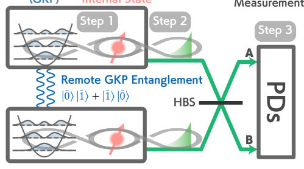
<figcaption class="paper-figure-caption"><b>Fig 1.</b> FIG. 1. Overview of the heralded protocol for generat- ing remote entanglement between motional GKP qubits in trapped ions. Each node contains a motional GKP qubit, an internal-state ancilla, and an optical interface to a flying photonic qubit. HBS denotes the half beam splitter to in- terfere the photons in Step 3. In Step 1, the motional GKP qubit is locally entangled with the internal state. In Step 2, state-selective excitation and photon emission generate a local motion–ion–photon GHZ state. In Step 3, the photons from the two nodes interfere at a central station and are measured by photo-detectors (PDs) to perform a Bell-state measure- ment. Conditioning on a successful photonic...</figcaption>
</figure>
<figure class="paper-figure-card">
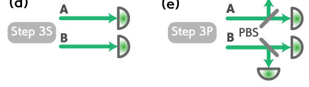
<figcaption class="paper-figure-caption"><b>Fig 2.</b> FIG. 2. Detailed operations in Steps 1–3. (a) Con- ceptual representation of local motion–ion entangled state preparation from the motional vacuum and the internal ground state. Sq. and SDD + Meas. denote squeez- ing and state-dependent displacements and measurement im- plemented through motion–ion interactions. (b),(c) State- selective excitation for (b) the single-rail encoding and (c) the polarization encoding. (d),(e) Photonic Bell-state mea- surements for (d) the single-rail encoding and (e) the polar- ization encoding. The photodetectors are assumed to have insufficient temporal resolution to resolve the photon-arrival times.</figcaption>
</figure>
<figure class="paper-figure-card">
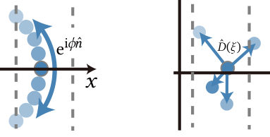
<figcaption class="paper-figure-caption"><b>Fig 3.</b> FIG. 3. Noise channels included in the remote-entanglement model. (a) Photon loss is represented by a beam splitter with transmission efficiency ηph; it acts as amplitude damping for the single-rail encoding but reduces the heralding proba- bility for the polarization encoding under two-photon post- selection. (b) Photon recoil during Step 2 consists of the absorption displacement ˆD(iη) followed by the emission dis- placement ˆD[−iηeiωmt]. Because the photon-emission time is unresolved, the recoil operator ˆR(t) = ˆD[−iηeiωmt] ˆD(iη) is averaged over the emission-time distribution f(t). (c) Mo- tional heating during tfly produces isotropic Gaussian random displacements ˆD(α). (d) Motional...</figcaption>
</figure>
<figure class="paper-figure-card">

<figcaption class="paper-figure-caption"><b>Fig 4.</b> FIG. 4. Baseline logical performance of the remote- entanglement protocol in the absence of physical noise. Panel (a) shows the logical Bell-state infidelity 1 −FL as a func- tion of the GKP squeezing level ∆dB. Panels (b) and (c) show the real parts of the decoded logical density matrices at 6 dB and 15 dB, respectively. The logical basis is ordered as {|¯0¯0⟩, |¯0¯1⟩, |¯1¯0⟩, |¯1¯1⟩}. Photon recoil, photon loss, motional heating, and motional dephasing are disabled in all panels.</figcaption>
</figure>
<figure class="paper-figure-card">

<figcaption class="paper-figure-caption"><b>Fig 5.</b> FIG. 5. Effect of photon loss on the logical state generated with the single-rail encoding. The logical Bell-state infidelity 1 −FL is shown as a function of the photon loss probabil- ity ploss = 1 −ηph for GKP squeezing levels of 6, 9, 12, and 15 dB. The infidelity is contributed by finite squeezing and the false-herald event produced when one photon is lost from the two-photon input. The polarization-encoding result is not shown because, under ideal two-photon postselection, photon loss does not change the resultant state. Photon recoil, mo- tional heating, and motional dephasing are disabled. The model assumes identical independent photon losses, photon- number-resolving detection, and...</figcaption>
</figure>
</div>

<p><strong>Summary.</strong> This paper presents a heralded protocol to generate remote entanglement between GKP logical qubits encoded in trapped-ion motional modes. It details a three-step process utilizing internal electronic states to mediate entanglement transfer via emitted photons. The analysis rigorously quantifies the achievable logical fidelity, demonstrating performance above 95% even when incorporating realistic noise sources like heating and photon loss.</p>
<p><strong>Why it may be interesting.</strong> This work directly addresses the physical implementation challenges of quantum networking by providing a concrete, high-fidelity protocol for distributing entanglement using established trapped-ion platforms.</p>
<details>
<summary>Detailed structure</summary>
<p><strong>Main problem.</strong> The core problem is developing a scalable method to distribute entanglement directly between error-corrected logical qubits, which is crucial for building quantum networks.</p>
<p><strong>Main result.</strong> The authors propose a heralded protocol achieving a logical Bell-state fidelity exceeding 95% in realistic trapped-ion settings, even when accounting for various noise sources.</p>
<p><strong>Method.</strong> The protocol uses a three-step process involving local entanglement generation, conversion to a motion-ion-photon GHZ state, and final remote entanglement projection via photon interference.</p>
<p><strong>Model / system.</strong> The system is trapped ions, where Gottesman-Kitaev-Preskill (GKP) qubits are encoded in the motional modes. The process interfaces these motional qubits with emitted photons using the internal electronic states.</p>
<p><strong>Key observables.</strong> Logical Bell-state fidelity ($F_L$), which is evaluated using Stabilizer Subsystem Decomposition (SSSD).</p>
<p><strong>Important parameters / regimes.</strong> Noise parameters include photon recoil, motional heating rate ($\dot{ar{n}}$), and motional dephasing rate ($\kappa_{\phi}$).</p>
<p><strong>Assumptions / limitations.</strong> The protocol assumes the combination of motional-control and photonic-networking operations are already demonstrated in trapped-ion experiments, and the BSM detectors lack temporal resolution.</p>
<p><strong>Figures summary.</strong> Figure 1 provides an overview of the heralded protocol (Motional GKP $\leftrightarrow$ Internal State $\leftrightarrow$ Photonic State $
ightarrow$ Bell State Measurement), while Figure 2 details the three steps, and subsequent figures analyze fidelity dependence on noise.</p>
<p><strong>Paper structure.</strong> The paper details the three-step protocol (local entanglement, GHZ generation, remote projection), derives the necessary Hamiltonians and noise channels (recoil, heating, dephasing), and concludes with a numerical analysis of the logical fidelity under realistic noise conditions.</p>
</details>
<details>
<summary>Abstract</summary>
<p>Distributing entanglement directly between error-corrected logical qubits is an important capability for scalable quantum networks. We propose a heralded protocol for generating remote entanglement between Gottesman--Kitaev--Preskill qubits encoded in the motional modes of spatially separated trapped ions, using the internal electronic states to interface the motional qubits with emitted photons. We derive the protocol for single-rail and polarization photonic encodings and evaluate the effects of finite GKP squeezing, photon loss, photon recoil, motional heating, and motional dephasing on the decoded logical state. Moreover, we numerically analysed the fidelity of distributed logical Bell-pair fidelity. We find that one can achieve more than 95% of fidelity in the realistic situation. The protocol combines motional-control and photonic-networking operations that have already been demonstrated in trapped-ion experiments.</p>
</details>
<p><sub><a href="#top">↑ back to top</a></sub></p>

<p><a id="paper-2610.21853"></a></p>
<h3 id="superconducting-circuits-host-two-level-systems-with-lifetimes-exceeding-one-second"><a href="http://arxiv.org/abs/2610.21853v1">Superconducting circuits host two-level systems with lifetimes exceeding one second</a></h3>
<p><strong>Authors:</strong> Mathieu Féchant, Phillip Lenhard, Nicolas Gosling, Ritika Dhundhwal, Denis Bénâtre, Wolfgang Wernsdorfer, Thomas Reisinger, Ioan M. Pop<br>
<strong>Type:</strong> experiment · <strong>Category:</strong> quantum information and computing · <strong>PDF:</strong> <a href="https://arxiv.org/pdf/2610.21853v1">https://arxiv.org/pdf/2610.21853v1</a><br>
<strong>Analysis basis:</strong> full PDF text, analyzed in chunks
<strong>Topic relevance:</strong> 🔥 <code>QC/QI experiment</code> <strong>4/5</strong> · <code>quantum measurements</code> <strong>3/5</strong> · <code>methods for driven-dissipative</code> <strong>2/5</strong> · <code>correlated / nonlocal dissipation</code> <strong>1/5</strong> · <code>driven-dissipative phase transition</code> <strong>1/5</strong></p>
<div class="figure-strip-hint">↔ Scroll figures horizontally</div>
<div class="paper-figures-scroll">
<figure class="paper-figure-card">

<figcaption class="paper-figure-caption"><b>Fig 1.</b> Figure 1. Schematic of the interaction between a qubit and a long-lived TLS, in the case where they are each other’s dominant loss mechanism. For low coupling g com- pared to the qubit and TLS decoherence rates,Γ2 and (Γ2)TLS respectively , vacuum Rabi oscillations are overdamped and the energy exchange between qubit and TLS is described by a Purcell rate Γqt.</figcaption>
</figure>
<figure class="paper-figure-card">

<figcaption class="paper-figure-caption"><b>Fig 2.</b> Figure 2. Quantum jump correlation spectroscopy performed over flux and Stark shift detuning. Each point corresponds to a stroboscopic quantum jumps experiment with 1 µs measurement pulse at zero detuning and a 40 µs wait at a Stark shift detuned frequency. (a) Qubit population conditioned on measuring |1⟩in the previous step, as shown in the bottom left schematic. The range of qubit population from 0.6 to 0.7 corresponds to a range of T1 from 70 to 110 µs. The red line depicts the frequency of the undriven flux tunable Transmon. (b) Qubit population conditioned on measuring a jump down, as shown in the bottom left schematic. This correlation spectroscopy shows photon back flow after a...</figcaption>
</figure>
<figure class="paper-figure-card">

<figcaption class="paper-figure-caption"><b>Fig 3.</b> Figure 3. TLS pump and probe. (a) Schematic of the pump (orange highlight) and probe (green highlight) sequence. To pump the TLS, we actively reset the qubit after which we bring to a detuning δpump from the TLS for a time tpump. To fully polarize the TLS, we repeat the pumping sequence N times. After pumping, we idle at a detuning δdelay. To probe the TLS, we first measure the qubit (M1), after which we idle for tprobe at a detuning δprobe with the TLS, and finally we measure the population returned back to the qubit (M2). (b) Probe population after pumping sequences ranging from 0 to 100 µs and N = 1 to N = 60 repetitions. Dashed lines indicate the fit with Solomon equations with Γqt =...</figcaption>
</figure>
<figure class="paper-figure-card">

<figcaption class="paper-figure-caption"><b>Fig 4.</b> Figure 4. TLS Relaxation with qubit-TLS detuning. (a) Return photon amplitude for increasing delay time showing the decay of the TLS photon. The dashed lines show the Lorentzian fit with width around .1 MHz, close to the qubit decoherence rate of (15 µs)−1. (b) Decay curves of the return population for varying qubit TLS detuning δdelay. Dashed lines show the fitted exponential decay. The diamonds on the .21 MHz detuning curve indicate the points shown in (a) (c) Measured TLS lifetimes for three different TLSs as a function of qubit-TLS detuning . The TLS at 3.948 GHz is TLS 1 in figure 2. The solid lines show the fitted Purcell decay in which the width Γ of the Purcell formula is taken to...</figcaption>
</figure>
<figure class="paper-figure-card">

<figcaption class="paper-figure-caption"><b>Fig 5.</b> Figure 5. (a) Optical Image of the Transmon circuit of sample 1 next to scaled pattern of the readout LC structure. (b)Structure of sample 2 . It has the same exact structure without the two lines of the readout circuit extending into the transmon. (b) Variation of the two measured transmons Josephson energies(red for sample 1 and green points for sample 2) over time. The sample 2 had already aged for a year before starting measurements.</figcaption>
</figure>
</div>

<p><strong>Summary.</strong> This paper investigates the microscopic environment of superconducting qubits by measuring parasitic Two-Level Systems (TLSs). Using advanced quantum-jump and pump-probe techniques, the researchers identified TLSs with remarkably long lifetimes, exceeding one second. This work not only characterizes these limiting defects but also establishes superconducting qubits as a powerful tool for probing fundamental, long-lived quantum noise sources.</p>
<p><strong>Why it may be interesting.</strong> This work directly addresses the environmental coupling mechanisms crucial for building fault-tolerant quantum computers, providing quantitative measurements of decoherence sources.</p>
<details>
<summary>Detailed structure</summary>
<p><strong>Main problem.</strong> The central challenge in superconducting qubits is understanding the parasitic Two-Level Systems (TLSs) that limit performance through decoherence and frequency drifts.</p>
<p><strong>Main result.</strong> The authors identified microscopic TLSs with intrinsic lifetimes exceeding one second, establishing superconducting qubits as a sensitive probe for these long-lived environmental degrees of freedom.</p>
<p><strong>Method.</strong> The study employed wide-band quantum-jump correlation spectroscopy and pump-probe measurements at varying detunings to characterize the TLS dynamics.</p>
<p><strong>Model / system.</strong> The platform is flux-tunable transmon qubits fabricated on superconducting circuits. The environment is modeled by coupling the qubit to TLSs, whose interaction is analyzed using quantum jump theory and Solomon equations.</p>
<p><strong>Key observables.</strong> Intrinsic TLS relaxation time (T_TLS) measured in the seconds range, qubit population dynamics after quantum jumps, and TLS spectral features.</p>
<p><strong>Important parameters / regimes.</strong> TLS coupling strength (in the kHz range), detuning ($\delta$), and the qubit's coherence time ($T_1$).</p>
<p><strong>Assumptions / limitations.</strong> The weak coupling to the TLSs is consistent with positional defects described by the standard tunneling model, though other origins are not excluded.</p>
<p><strong>Figures summary.</strong> Figures illustrate quantum jump spectroscopy results, pump-probe sequences showing population evolution, and plots detailing the measured intrinsic TLS lifetimes as a function of detuning.</p>
<p><strong>Paper structure.</strong> The paper progresses by first identifying the problem of TLS-induced decoherence, then detailing the quantum-jump and pump-probe measurement techniques, culminating in the measurement and characterization of ultra-long-lived TLSs.</p>
</details>
<details>
<summary>Abstract</summary>
<p>Understanding the microscopic environment of superconducting qubits is a central challenge for quantum technologies. Parasitic two-level systems (TLSs) of various microscopic origins are ubiquitous and limit qubit performance through decoherence, frequency drifts, and leakage. Recently, long-lived TLSs with lifetimes exceeding those of state-of-the-art qubits have been shown to induce correlated qubit dynamics, with direct implications for quantum error correction. Here, we perform wide-band quantum-jump correlation spectroscopy on flux-tunable transmon qubits and identify microscopic degrees of freedom that outlive the qubit by orders of magnitude. Pump-probe measurements at varying detunings from these objects reveal intrinsic lifetimes exceeding one second. Their weak coupling to the qubit, in the kilohertz range, is consistent with positional defects described by the standard tunneling model, without excluding other microscopic origins such as magnetic spin impurities or trapped quasiparticles. More broadly, these results establish superconducting qubits as a sensitive probe of exceptionally long-lived microscopic degrees of freedom and open a route toward their controlled access and functionalization.</p>
</details>
<p><sub><a href="#top">↑ back to top</a></sub></p>

<p><a id="paper-2610.20810"></a></p>
<h3 id="syndrome-resolved-decoding-of-qubit-readout-errors"><a href="http://arxiv.org/abs/2610.20810v1">Syndrome-Resolved Decoding of Qubit Readout Errors</a></h3>
<p><strong>Authors:</strong> Han Zheng, Vladimir Pešić, Nikolay Gusarov, Andrea Lizzit, Taketo Imaizumi, Chulwoo Ahn, Marco Nicolas Mueller, Raymond Mencia, Edoardo Charbon, Vladimir E. Manucharyan<br>
<strong>Type:</strong> experiment · <strong>Category:</strong> quantum information and computing · <strong>PDF:</strong> <a href="https://arxiv.org/pdf/2610.20810v1">https://arxiv.org/pdf/2610.20810v1</a><br>
<strong>Analysis basis:</strong> full PDF text, analyzed in chunks
<strong>Topic relevance:</strong> 🔥 <code>QC/QI experiment</code> <strong>4/5</strong> · <code>quantum measurements</code> <strong>3/5</strong> · <code>Full counting statistics</code> <strong>1/5</strong> · <code>correlated / nonlocal dissipation</code> <strong>1/5</strong> · <code>methods for driven-dissipative</code> <strong>1/5</strong></p>
<div class="figure-strip-hint">↔ Scroll figures horizontally</div>
<div class="paper-figures-scroll">
<figure class="paper-figure-card">

<figcaption class="paper-figure-caption"><b>Fig 1.</b> FIG. 1. Overview of the RED protocol. (a) Binary readout: each single-shot IQ point is thresholded into a bit mi ∈{0, 1}. (b) The two ways the qubit state can change during the readout: a flip inside the computational subspace, |g⟩↔|e⟩, and leakage to the non-computational state |l⟩. (c) The RED sequence and its analysis. Readouts are interleaved with a fixed gate G ∈{I, X, X-τ-X}, which gives the gate record G, the measured record m, and the correlation record c. Broken correlations are grouped by how many occur in a row into the syndromes S1, S2, and S3+, and the decoder turns these counts into channel estimators for assignment, bit-flip, and leakage, resolved by the |g⟩and |e⟩branch. The...</figcaption>
</figure>
<figure class="paper-figure-card">

<figcaption class="paper-figure-caption"><b>Fig 2.</b> FIG. 3. Assignment and bit-flip errors versus read- out duration. (a) Fluxonium and (b) transmon. The assignment-error rate decreases with increasing tRO as the readout SNR improves, while the bit-flip rates from |g⟩and |e⟩increase approximately linearly over the fitted range. Solid black curves show Gaussian-overlap fits to the assignment er- rors, while dashed lines show linear fits to the bit-flip rates, yielding the excitation and relaxation rates Γ↑and Γ↓. The fitting models are detailed in Appendix D.</figcaption>
</figure>
<figure class="paper-figure-card">

<figcaption class="paper-figure-caption"><b>Fig 3.</b> FIG. 2. Controlled error-injection validation of RED. (a) Bit flips are injected by a π01 pulse applied with proba- bility Pb on I sequences prepared in |g⟩and |e⟩: the extracted bit-flip channel tracks Pb with near-unit slope on both prepa- rations, while the assignment channel remains nearly flat. (b) Leakage is injected by a π12 pulse applied with probability Pf starting from |e⟩. The extracted leakage error from the X-τ- X sequence increases linearly with Pf with a fitted slope of 0.887, while the raw S1 rate of the I reference remains nearly constant. Data are taken on fluxonium qubits.</figcaption>
</figure>
<figure class="paper-figure-card">

<figcaption class="paper-figure-caption"><b>Fig 4.</b> FIG. 4. RED leakage detection across long- and short-lived regimes. (a) Leaked population during repeated readouts. A long-lived leakage persists over many readout cycles and breaks a run of correlations; a short-lived leakage returns within one cycle and breaks only one correlation at most. (b) Long-lived-leakage probe: repeated readouts with an inter-readout X gate. (c) Transmon data, S3+ versus readout duration. The rate from |e⟩rises with tRO; the rate from |g⟩stays at the noise floor. The gray band marks a reference threshold equal to 10% of the largest decoded error channel. The same band is shown in (e). (d) Short-lived-leakage probe: an X −τ −X sequence between successive readouts....</figcaption>
</figure>
</div>

<p><strong>Summary.</strong> This work introduces the Readout Error Decoder (RED), a novel technique to diagnose and quantify individual readout error channels—such as bit-flips, assignment errors, and leakage—in superconducting qubits. By analyzing temporal correlations across multiple measurements, RED bypasses the need for perfect state discrimination. This provides a vital, targeted diagnostic tool for optimizing qubit readout fidelity across various superconducting platforms.</p>
<p><strong>Why it may be interesting.</strong> It provides a powerful, general diagnostic tool for characterizing measurement-induced decoherence in solid-state qubits, which is crucial for scaling up quantum processors.</p>
<details>
<summary>Detailed structure</summary>
<p><strong>Main problem.</strong> Readout errors in superconducting qubits (assignment, bit-flips, leakage) are difficult to quantify because conventional metrics cannot resolve their individual contributions.</p>
<p><strong>Main result.</strong> The Readout Error Decoder (RED) successfully separates and quantifies these distinct error channels using temporal correlations from repeated measurements, even without dedicated state discrimination.</p>
<p><strong>Method.</strong> RED converts repeated, thresholded binary readout records into a channel-resolved error budget by analyzing syndrome patterns derived from correlations between successive measurements.</p>
<p><strong>Model / system.</strong> The study uses superconducting qubits, specifically fluxonium and transmon architectures, as the physical platform for testing the error decoding protocol.</p>
<p><strong>Key observables.</strong> Error rates for assignment error, bit-flip error, and leakage; coherence times ($T_q$); and syndrome patterns ($S1, S2, S3+$).</p>
<p><strong>Important parameters / regimes.</strong> Readout duration ($t_{RO}$); leakage lifetimes ($ au_{leak}$); and gate sequences ($I, X, X- au-X$).</p>
<p><strong>Assumptions / limitations.</strong> The method assumes that the error patterns leave distinct, measurable signatures in the temporal correlation records, allowing for channel separation.</p>
<p><strong>Figures summary.</strong> Figures illustrate the RED protocol overview, validation via controlled error injection, and the dependence of error rates (assignment/bit-flip) on readout duration for different qubit types.</p>
<p><strong>Paper structure.</strong> The paper introduces the RED protocol, validates it using controlled error injections on multiple superconducting qubit types, quantifies the separated error rates across different leakage regimes, and compares derived coherence times to independent measurements.</p>
</details>
<details>
<summary>Abstract</summary>
<p>Readout errors in superconducting qubits include incorrect state assignment, bit flips within the computational subspace, and leakage to non-computational states. These errors require different mitigation strategies, yet conventional measurement fidelity and repeatability metrics do not resolve their individual contributions. Previous repeated-readout studies have shown that temporal correlations reveal additional information about readout errors. Here we introduce the Readout Error Decoder (RED), which converts repeated thresholded binary records into a channel-resolved error budget. Controlled error injections validate the channel-specific response of the decoder. We demonstrate RED on both fluxonium and transmon qubits and across distinct leakage-lifetime regimes. RED identifies the error channels limiting readout performance without requiring dedicated discrimination of non-computational states, providing a basis for targeted readout optimization across different qubit modalities.</p>
</details>
<p><sub><a href="#top">↑ back to top</a></sub></p>

<p><a id="paper-2610.22318"></a></p>
<h3 id="magic-in-quantum-trajectory-unravelings-of-noisy-random-quantum-circuits"><a href="http://arxiv.org/abs/2610.22318v1">Magic in quantum trajectory unravelings of noisy random quantum circuits</a></h3>
<p><strong>Authors:</strong> Sara Santos, Alessio Paviglianiti, Vincenzo Savona<br>
<strong>Type:</strong> theory · <strong>Category:</strong> quantum information and computing · <strong>PDF:</strong> <a href="https://arxiv.org/pdf/2610.22318v1">https://arxiv.org/pdf/2610.22318v1</a><br>
<strong>Analysis basis:</strong> full PDF text, analyzed in chunks
<strong>Topic relevance:</strong> 🔥 <code>quantum measurements</code> <strong>4/5</strong> · <code>methods for driven-dissipative</code> <strong>3/5</strong> · <code>correlated / nonlocal dissipation</code> <strong>1/5</strong> · <code>driven-dissipative phase transition</code> <strong>1/5</strong></p>
<div class="figure-strip-hint">↔ Scroll figures horizontally</div>
<div class="paper-figures-scroll">
<figure class="paper-figure-card">

<figcaption class="paper-figure-caption"><b>Fig 1.</b> FIG. 1. Random quantum-circuit ensembles. All qubits are initialized in |0⟩. The vertical dashed lines delimit com- plete brickwork layers, each formed by two sublayers acting on complementary sets of nearest-neighbor bonds. (a) Haar- random circuit, in which each green block is an independently sampled two-qubit Haar unitary. (b) T-doped Clifford circuit, in which each blue block is an independently sampled two- qubit Clifford and a T gate is applied independently to each participating qubit with probability q. Red circles denote the local single-qubit noise channel applied after each ideal gate block.</figcaption>
</figure>
<figure class="paper-figure-card">

<figcaption class="paper-figure-caption"><b>Fig 2.</b> FIG. 2. Magic dynamics in noisy Haar-random brick- work circuits. M 2/M H 2 after each circuit layer, for dephas- ing probabilities (a) p = 0.01 and (b) p = 0.1. Each panel compares the canonical unraveling (θ = 0) with the quantum- jump unraveling (θ = θ∗), with ϕ = 0 in both cases. Circuits contain n = 8 qubits and 16 layers. Each curve averages over 80 random circuit realizations, with 1000 trajectories per re- alization.</figcaption>
</figure>
<figure class="paper-figure-card">

<figcaption class="paper-figure-caption"><b>Fig 3.</b> FIG. 3. Magic dynamics in noisy T-doped random Clif- ford brickwork circuits. M 2/M H 2 after each circuit layer, for (a) p = 0.01, q = 0.05; (b) p = 0.01, q = 0.2; (c) p = 0.1, q = 0.05; and (d) p = 0.1, q = 0.2. Each panel compares the canonical unraveling (θ = 0) with the quantum-jump unravel- ing (θ = θ∗), with ϕ = 0 in both cases. Circuits contain n = 8 qubits and 32 layers. Each curve averages over 80 random cir- cuit realizations, with 1000 trajectories per realization.</figcaption>
</figure>
<figure class="paper-figure-card">

<figcaption class="paper-figure-caption"><b>Fig 4.</b> FIG. 4. Magic in noisy Haar-random brickwork circuits as a function of the unraveling parameters. (a)–(c) M 2/M H 2 at the end of circuits with n = 8 qubits and NL = 16 layers, for dephasing probabilities p = 0.01 in (a),(d), p = 0.05 in (b),(e), and p = 0.1 in (c),(f). Panels (a)–(c) sample 50 values of each unraveling angle, θ and ϕ; panels (d)–(f) show the corresponding ϕ = 0 cuts (symbols connected by solid lines). Vertical red dashed lines mark the quantum-jump unraveling, θ = θ∗. Horizontal dashed lines show the values obtained with the projective unraveling of Eq. (11). All averages use 8 random circuit realizations, with 1000 trajectories per realization.</figcaption>
</figure>
<figure class="paper-figure-card">

<figcaption class="paper-figure-caption"><b>Fig 5.</b> FIG. 5. Unraveling dependence of magic in noisy Haar-random brickwork circuits. (a) M 2/M H 2 as a func- tion of the unraveling angle θ and the dephasing probability p, with ϕ = 0, at the end of circuits with n = 8 qubits and NL = 16 layers, sampling 50 values each of θ and p. The red dashed line marks the quantum-jump unraveling; the black solid line marks θmin(p), the angle minimizing M 2 among the sampled θ values at each p. (b) M 2/M H 2 at θ = θ∗(red squares, dashed line) and θ = θmin (black circles, solid line) as a function of p. Values at θ∗are obtained by linear inter- polation along the sampled θ grid. All averages use 8 random circuit realizations, with 1000 trajectories per...</figcaption>
</figure>
</div>

<p><strong>Summary.</strong> This paper investigates the non-uniqueness of quantum trajectories used to model noisy quantum circuits. By quantifying 'magic' using stabilizer entropy, the authors show that while the average magic can be reduced by choosing an optimal unraveling, the simulation cost is dictated by the few trajectories that retain high, near-maximal magic. This limits the effectiveness of stabilizer-based classical simulation methods.</p>
<p><strong>Why it may be interesting.</strong> It provides a deep theoretical understanding of how noise modeling choices (unravelings) impact the quantifiable resources (magic) used in quantum simulation, which is crucial for understanding the limits of classical simulation.</p>
<details>
<summary>Detailed structure</summary>
<p><strong>Main problem.</strong> The quantum-trajectory description of noisy quantum circuits is non-unique, leading to different estimates of quantum resources like non-stabilizerness (magic).</p>
<p><strong>Main result.</strong> The optimal unraveling, which is not the standard projective measurement, can substantially reduce the average magic, but the simulation cost is controlled by the high-magic trajectories, not the average.</p>
<p><strong>Method.</strong> The authors analyze the non-uniqueness of quantum unravelings by quantifying non-stabilizerness using the stabilizer Rényi entropy ($M_2$) for various noise models.</p>
<p><strong>Model / system.</strong> The study uses noisy random quantum circuits (Haar-random or T-doped Clifford) on $n$ qubits subjected to local dephasing noise ($p$).</p>
<p><strong>Key observables.</strong> Non-stabilizerness (Magic), quantified by the stabilizer Rényi entropy ($M_2$), and the trajectory-averaged magic.</p>
<p><strong>Important parameters / regimes.</strong> Noise strength ($p$), system size ($n$), and the choice of unraveling parameters ($   heta, \phi$).</p>
<p><strong>Assumptions / limitations.</strong> The simulation cost of stabilizer-based classical methods grows exponentially with the magic of the state.</p>
<p><strong>Figures summary.</strong> Figures compare the evolution of magic ($M_2$) for different unravelings (canonical vs. optimal) under noise, showing how the average magic changes while high-magic trajectories persist.</p>
<p><strong>Paper structure.</strong> The paper systematically compares the magic calculated using different Kraus representations (unravelings) for various noise types (dephasing, depolarizing, amplitude damping), establishing which unraveling yields the minimum average magic.</p>
</details>
<details>
<summary>Abstract</summary>
<p>The quantum-trajectory description of a noisy quantum circuit is not unique: every Kraus representation of the noise channel defines a different unraveling, i.e., a different ensemble of pure states that averages to the same density matrix. While all unravelings share the same expectation values of observables, they generally differ in the amount of quantum resources carried by the individual trajectories. Here we study non-stabilizerness, or magic, quantified by the stabilizer Rényi entropy, in quantum-trajectory unravelings of Haar-random and $T$-doped random Clifford brickwork circuits subject to local dephasing noise of strength $p$. The canonical unraveling in terms of Pauli jumps is Clifford and leaves magic untouched, so that trajectories retain the Haar-random value of non-stabilizerness. Exploring the full two-parameter family of minimal unravelings, we find that the trajectory-averaged magic can be substantially reduced by a state-independent choice of Kraus operators, and that the optimal choice is not in general the projective-measurement unraveling, but a two-outcome generalized measurement in which the Kraus operators correspond to a weak measurement of the noisy qubit. The optimal unraveling reduces the extensive magic density of the trajectories by a $p$-dependent factor without altering its linear scaling with system size. At the same time, it produces a very broad distribution of magic over trajectories, with a sizable fraction of trajectories retaining Haar-random magic. Since the cost of stabilizer-based classical simulation grows exponentially with the magic of the state, these high-magic trajectories, rather than the average, control the simulation cost. Our results delineate the potential and the limitations of unraveling optimization as a route to the classical simulation of noisy quantum dynamics with stabilizer methods.</p>
</details>
<p><sub><a href="#top">↑ back to top</a></sub></p>

<p><a id="paper-2610.21801"></a></p>
<h3 id="three-axis-active-magnetic-compensation-with-spatial-feedforward-matrix-decoupling-and-hysteresis-pi-regulation-for-suppressing-zeeman-decoherence-of-cold-atom-quantum-memories"><a href="http://arxiv.org/abs/2610.21801v1">Three-axis Active Magnetic Compensation with Spatial Feedforward Matrix Decoupling and Hysteresis PI Regulation for Suppressing Zeeman Decoherence of Cold Atom Quantum Memories</a></h3>
<p><strong>Authors:</strong> Ya Li, Xiao-Long Zou, Xiang-Yao Liang, Chang-Qing Niu, Xin Guo, Wei-Zhe Qiao, You-Xing Chen<br>
<strong>Type:</strong> experiment · <strong>Category:</strong> other · <strong>PDF:</strong> <a href="https://arxiv.org/pdf/2610.21801v1">https://arxiv.org/pdf/2610.21801v1</a><br>
<strong>Analysis basis:</strong> full PDF text, analyzed in chunks
<strong>Topic relevance:</strong> 🔥 <code>quantum measurements</code> <strong>4/5</strong> · <code>QC/QI experiment</code> <strong>3/5</strong> · <code>analog quantum simulation</code> <strong>2/5</strong></p>
<div class="figure-strip-hint">↔ Scroll figures horizontally</div>
<div class="paper-figures-scroll">
<figure class="paper-figure-card">

<figcaption class="paper-figure-caption"><b>Fig 1.</b> Fig. 1. Schematic energy-level structure of the write and read processes</figcaption>
</figure>
<figure class="paper-figure-card">

<figcaption class="paper-figure-caption"><b>Fig 2.</b> Fig. 2. Illustrative theoretical curves. (a) represents the variation process of the readout efficiency</figcaption>
</figure>
<figure class="paper-figure-card">

<figcaption class="paper-figure-caption"><b>Fig 3.</b> Fig. 3. Schematic diagram of the triaxial active magnetic compensation closed-loop measurement</figcaption>
</figure>
<figure class="paper-figure-card">

<figcaption class="paper-figure-caption"><b>Fig 4.</b> Fig.4. Flowchart of matrix-decoupled incremental PI control with dual persistent hysteresis thresholds.</figcaption>
</figure>
<figure class="paper-figure-card">

<figcaption class="paper-figure-caption"><b>Fig 5.</b> Fig. 5. Dynamic convergence and anti-interference responses of the three-axis active magnetic compensation system. (a) Stage I: Rapid compensation of initial geomagnetic field; (b) Stage II: Intermittent fine regulation with alternating ACTIVE/HOLD states; (c) Stage III: Continuous steady-state HOLD period.</figcaption>
</figure>
</div>

<p><strong>Summary.</strong> This paper presents an advanced, integrated hardware and software solution to actively compensate for magnetic field inhomogeneities that cause decoherence in cold atom quantum memories. By combining a specialized coil geometry, feedforward decoupling, and a hysteresis-controlled PI loop, the system achieves unprecedented temporal and spatial stability in the near-zero magnetic field regime. This work is crucial for realizing robust, long-lived quantum memory platforms.</p>
<p><strong>Why it may be interesting.</strong> This work provides a highly detailed engineering blueprint for achieving the necessary ultra-stable magnetic environments required for next-generation quantum memory research, directly impacting the feasibility of quantum information processing using cold atoms.</p>
<details>
<summary>Detailed structure</summary>
<p><strong>Main problem.</strong> The primary challenge is suppressing Zeeman decoherence in cold atom quantum memories, which necessitates maintaining an extremely uniform and near-zero residual magnetic field.</p>
<p><strong>Main result.</strong> The proposed integrated system achieved exceptional stability, reaching mean residual fields of $0.112 \mu	ext{T}$ over long hold times and demonstrating high spatial uniformity, with $93.7\%$ of the target volume meeting the sub-$5 \mu	ext{T}$ criterion.</p>
<p><strong>Method.</strong> The authors developed a spatiotemporally cooperative feedback control architecture combining mechanical coil design, algorithmic feedforward decoupling, and a dual-threshold hysteresis PI controller.</p>
<p><strong>Model / system.</strong> The system uses a triaxial active magnetic compensation platform with an orthogonal coil frame to stabilize the magnetic environment for cold atoms. The control loop compensates for crosstalk and drift using inverse matrix techniques and hysteresis filtering.</p>
<p><strong>Key observables.</strong> Mean and maximum residual magnetic fields ($\mu	ext{T}$), Allan deviations ($   ext{nT}$), and spatial variation metrics (RMS variation, volume coverage percentage).</p>
<p><strong>Important parameters / regimes.</strong> Target residual field $< 1 \mu	ext{T}$; long-duration stability tests (up to $714.4 	ext{ s}$); spatial dimensions ($5 	ext{ mm}$ radius, $10 	imes 5 	imes 5 	ext{ mm}$ ellipsoid).</p>
<p><strong>Assumptions / limitations.</strong> The spatial field distribution is reconstructed using a center-constrained quadratic vector model with soft Maxwell regularization, which is an estimation technique.</p>
<p><strong>Figures summary.</strong> Figures illustrate the closed-loop measurement and control system schematic, the comparison of readout efficiency decay with and without compensation, and spatial slice maps showing reconstructed field anisotropy.</p>
<p><strong>Paper structure.</strong> The paper progresses by first defining the physical necessity (zero field for quantum memories), then detailing the limitations of existing methods, proposing the integrated hardware/software solution (mechanical, algorithmic, control), and finally presenting extensive experimental validation across temporal stability and spatial mapping.</p>
</details>
<details>
<summary>Abstract</summary>
<p>Cold-atom quantum memories require a near-zero magnetic environment (residual field &lt;1 microtesla) to mitigate Zeeman decoherence. Conventional three-axis active compensation suffers from inter-coil crosstalk and geomagnetic drift, which degrade the uniformity and long-term stability of the zero-field region. To address this, we propose a spatiotemporally cooperative feedback-controlled suppression architecture for magnetic interference. An integrally printed three-dimensional orthogonal coil frame mechanically suppresses inter-axis flux leakage. A spatial feedforward inverse matrix is introduced to algorithmically eliminate first-order cross-coupling. A dual-threshold hysteresis incremental-PI controller filters magnetometer quantization fluctuations and avoids frequent small jitter adjustments of coil driving currents. Hardware ablation experiments, long-duration stability tests and spatial magnetic-field mapping were conducted. Experimental results show that during a 714.4 s continuous steady-hold stage, the mean and maximum residual fields at the central point reach 0.112 microtesla and 0.224 microtesla, respectively. The overlapping Allan deviations of all three components remain below 5 nT for averaging times of 1.9-178.2 s. Based on differential-ferrofluid lattice-scan measurements combined with centre-constrained quadratic vector reconstruction and soft Maxwell regularization, a weak-field spatial distribution with an RMS variation of 5.65 microtesla is fitted within a spherical region of interest of radius 5 mm, where 67.5% of the model volume meets the sub-5 microtesla coverage criterion. For a prolate ellipsoidal region matching the atomic-cloud distribution with full axis lengths of 10, 5, and 5 mm, the upper field bound within 93.7% of the volume is 2.68 microtesla.</p>
</details>
<p><sub><a href="#top">↑ back to top</a></sub></p>

<p><a id="paper-2610.20793"></a></p>
<h3 id="collective-organization-of-string-fragmentation"><a href="http://arxiv.org/abs/2610.20793v1">Collective Organization of String Fragmentation</a></h3>
<p><strong>Authors:</strong> Romuald A. Janik, Maciej A. Nowak, Marek M. Rams, Ismail Zahed<br>
<strong>Type:</strong> theory · <strong>Category:</strong> numerical methods · <strong>PDF:</strong> <a href="https://arxiv.org/pdf/2610.20793v1">https://arxiv.org/pdf/2610.20793v1</a><br>
<strong>Analysis basis:</strong> full PDF text, analyzed in chunks
<strong>Topic relevance:</strong> 🔥 <code>methods for driven-dissipative</code> <strong>4/5</strong> · <code>Keldysh / 2PI / non-Gaussian methods</code> <strong>1/5</strong> · <code>analog quantum simulation</code> <strong>1/5</strong> · <code>non-equilibrium universality</code> <strong>1/5</strong> · <code>quantum measurements</code> <strong>1/5</strong></p>
<div class="figure-strip-hint">↔ Scroll figures horizontally</div>
<div class="paper-figures-scroll">
<figure class="paper-figure-card">

<figcaption class="paper-figure-caption"><b>Fig 1.</b> FIG. 1. Space-time picture of string fragmentation in the massive Schwinger model. At gt ≪1, receding external charges on x = ±t are joined by a coherent electric string; at gt ≫1, the string has fragmented into an approximately boost-invariant, weakly interacting mesonic dust.</figcaption>
</figure>
<figure class="paper-figure-card">

<figcaption class="paper-figure-caption"><b>Fig 2.</b> FIG. 2. In (a), we show normalized coherent-string survival factor, S(t), from the midpoint electric field. Tensor-network data are compared with the Gaussian Lund-area-law fit, Eq. (2). In (b), mass dependence of the string breaking coefficient is compared to Schwinger effect estimate with and without screening. In (c), we show dominant principal-component amplitude, Eq. (9), of (multidimensional-) midpoint electric field probability distributions. The independent Gaussian fit reproduces the string survival probability.</figcaption>
</figure>
<figure class="paper-figure-card">

<figcaption class="paper-figure-caption"><b>Fig 3.</b> FIG. 3. In (a), we show the fraction of temporal variance of electric field probabilities explained by the leading PCA component. In (b), we show full tensor-network probability distribution (solid) and leading-principal-component reconstruction (dashed) for m/g = 0.5. Their near agreement shows that one collective mode captures the observable probability redistribution. In (c), analogous plot for m/g = 0 clearly requires higher dimensional evolution.</figcaption>
</figure>
<figure class="paper-figure-card">

<figcaption class="paper-figure-caption"><b>Fig 4.</b> FIG. 4. Midpoint electric-field probability distributions at m/g = 0.5 for, in (a), the coherent parent-string state [62] and, in (b), the fragmented mesonic (“dust”) state. Fragmentation transfers probability from the string sector to screened configurations along a single dominant direction in probability space. In (c), we show effective equation of state in the coarse-grained fragmentation model. The survival probability controls the transfer of energy from the confining string, p ≃−ϵ, to an expanding mesonic medium with a small positive longitudinal pressure.</figcaption>
</figure>
<figure class="paper-figure-card">

<figcaption class="paper-figure-caption"><b>Fig 5.</b> FIG. 5. In (a), entanglement entropy (averaged over two neighboring sites at x = 0) of the individual electric field components of the wave function with the mesonic dust probability for comparison (m/g = 0.5). In (b), bipartite entropy SEE(t) at in the middle of the chain (solid), and the causal prediction of Eq. (16) (dashed), fitting only S∞. In (c), we show linear dependence between S∞and (m/g)2.</figcaption>
</figure>
</div>

<p><strong>Summary.</strong> This work uses real-time tensor-network simulations on the massive Schwinger model to study string fragmentation, a key process in high-energy physics. The research identifies that the entire complex process is governed by a single collective mode in the electric-field probability distribution. This finding provides microscopic support for the characteristic Gaussian decay law associated with Lund hadronization, linking quantum dynamics to established phenomenological models.</p>
<p><strong>Why it may be interesting.</strong> The use of tensor networks to model non-equilibrium dynamics in a confining gauge theory provides a concrete, computational framework for understanding complex many-body processes like hadronization, linking quantum information measures (entanglement) to physical observables.</p>
<details>
<summary>Detailed structure</summary>
<p><strong>Main problem.</strong> The paper addresses the fundamental open problem of understanding the dynamical mechanism by which coherent confining strings reorganize into hadronic matter (hadronization).</p>
<p><strong>Main result.</strong> The string fragmentation process is shown to be governed by a single collective mode in the electric-field probability distribution, which yields a Gaussian survival law matching the functional form of the Lund area law.</p>
<p><strong>Method.</strong> The study employs real-time tensor-network simulations (Matrix-Product-State formulation) applied to the massive Schwinger model to track the evolution of the electric-field probability distribution.</p>
<p><strong>Model / system.</strong> The physical system is the massive Schwinger model (QED in 1+1 dimensions), which is used to model confinement, Schwinger pair production, and subsequent meson formation. The dynamics are simulated using a lattice Hamiltonian and analyzed via tensor networks.</p>
<p><strong>Key observables.</strong> String survival probability $S(t)$, electric-field probability distribution $p_E(t)$, bipartite entanglement entropy $ ext{SEE}(t)$, and the effective equation of state for the produced mesonic 'dust'.</p>
<p><strong>Important parameters / regimes.</strong> Fermion mass $m$, coupling constant $g$, and the ratio $m/g$. The analysis is valid in the intermediate mass regime.</p>
<p><strong>Assumptions / limitations.</strong> The analysis assumes the dynamics can be effectively described by a single collective mode, and the results provide functional support for the Lund law without deriving the full mechanism.</p>
<p><strong>Figures summary.</strong> Figures illustrate the space-time picture of fragmentation, the decay of the string survival factor $S(t)$ against a Gaussian fit, and the decomposition of the probability distribution dynamics into a single dominant principal component.</p>
<p><strong>Paper structure.</strong> The paper establishes the problem using the massive Schwinger model, applies real-time tensor-network simulations to analyze the electric-field probability distribution, identifies the single collective mode governing the decay, and uses this mode to explain the universal equation of state and entanglement growth.</p>
</details>
<details>
<summary>Abstract</summary>
<p>How coherent confining strings reorganize into hadronic matter is a central open problem in nonequilibrium gauge dynamics. Using real-time tensor-network simulations of the massive Schwinger model, we identify a collective organization underlying string fragmentation. For intermediate masses, the dynamics simplifies and more than $99\%$ of the temporal evolution of the electric-field probability distribution is governed by a single collective mode whose decay tracks the survival probability of the parent string. The extracted survival law exhibits the same Gaussian dependence implied by the Lund world-sheet area law, providing microscopic support for its characteristic area law dependence without assuming the Lund fragmentation mechanism. The same mode controls the transition from the coherent string to the produced mesons, explains the universal non-thermal effective fluid equation of state, and essentially controls the growth of bipartite entanglement through the causal propagation of massive pairs. These results identify collective fragmentation as an organizing principle of coherent string breaking and provide a microscopic perspective on the dynamical origin of a central ingredient of Lund hadronization.</p>
</details>
<p><sub><a href="#top">↑ back to top</a></sub></p>

<p><a id="paper-2610.21047"></a></p>
<h3 id="agent-assisted-experimental-strategy-transfer-across-quantum-processors"><a href="http://arxiv.org/abs/2610.21047v1">Agent-assisted experimental strategy transfer across quantum processors</a></h3>
<p><strong>Authors:</strong> Shi-Yao Hou, Zipeng Wu, Chao Zhang, Guanru Feng, Keren Li, Jingen Xiang<br>
<strong>Type:</strong> experiment · <strong>Category:</strong> quantum information and computing · <strong>PDF:</strong> <a href="https://arxiv.org/pdf/2610.21047v1">https://arxiv.org/pdf/2610.21047v1</a><br>
<strong>Analysis basis:</strong> full PDF text, analyzed in chunks
<strong>Topic relevance:</strong> 🔥 <code>QC/QI experiment</code> <strong>4/5</strong> · <code>quantum measurements</code> <strong>3/5</strong></p>
<div class="figure-strip-hint">↔ Scroll figures horizontally</div>
<div class="paper-figures-scroll">
<figure class="paper-figure-card">

<figcaption class="paper-figure-caption"><b>Fig 1.</b> FIG. 1. Agent coordination and strategy transfer. a, Fixed-rule feedback. A controller updates predefined control variables. b, Agent-guided realization. The framework connects a scientific target to an experimental result through target-to-task (T2T; context only) and task-to-experiment (T2E; evaluated here). In T2E, a single agent invokes deterministic tools for characterization, control synthesis and acquisition, assesses their outputs and selects subsequent actions, with operators providing instrument preparation and physical intervention. c, Strategy transfer and local realization. Q0 supports guided development; Q1, Q2, Q4 and Q3 undergo sequential local adaptation and validation. Pi...</figcaption>
</figure>
<figure class="paper-figure-card">

<figcaption class="paper-figure-caption"><b>Fig 2.</b> FIG. 2. Development of the experimental strategy on Q0. a, Four q0 peaks and the two inner q2 peaks, with measured relative heights; dashed lines mark Hamiltonian-predicted frequencies. Frequencies are relative to fitted resonance offsets ∆νi; qi labels qubits within Q0. b, Empirical response matrix combining preparation, measurement and reconstruction effects. c, Normalized x/y radiofrequency (RF) control components of the 11-ms pulse and final-run populations (F1/F2). d, Early (E1/E2) and final (F1/F2) deviations, 100(p001 −121/128), in percentage points, calculated from unrounded populations. Horizontal segments connect each run to zero deviation (dashed line). All four runs used the...</figcaption>
</figure>
<figure class="paper-figure-card">

<figcaption class="paper-figure-caption"><b>Fig 3.</b> FIG. 3. Grover outcomes after cross-processor transfer. a,b, Marked-state populations and total- variation (TV) distances from ideal population distributions. The dashed line in a marks the ideal population, 121/128 ≃0.945. c, Simulated marked-state populations over the pulse-optimization ensemble, comprising five detunings from −40 to 40 Hz in 20-Hz steps and three radiofrequency-amplitude scales (0.95, 1.00 and 1.05). Vertical bars span the minimum to maximum, horizontal ticks mark the mean, and circles indicate zero detuning at unit amplitude scale.</figcaption>
</figure>
<figure class="paper-figure-card">

<figcaption class="paper-figure-caption"><b>Fig 4.</b> FIG. 4. Agent-guided repetition and output stability. a, Session acquisition order; days are relative to the first session. Q1 shows the earlier single-block validation; Q4-R1 stopped after reference failure. b, All 15 complete seven-setting repeats, ordered left to right within each session. For sessions with three repeats, filled and open circles in both panels indicate satisfactory and unsatisfactory repeatability, respectively, assessed qualitatively from their variation. Horizontal lines and vertical bars show each session’s mean and range.</figcaption>
</figure>
<figure class="paper-figure-card">

<figcaption class="paper-figure-caption"><b>Fig 5.</b> FIG. 5. Three-qubit Grover task. Two oracle–diffusion iterations amplify marked state m from a uniform superposition. The bracketed circuit defines the target of the locally optimized gradient ascent pulse engineering (GRAPE) state-preparation pulse.</figcaption>
</figure>
</div>

<p><strong>Summary.</strong> This paper introduces an agent-assisted methodology to enable the transfer and refinement of quantum experimental protocols across multiple, disparate quantum processors. By using an agent to guide adaptive measurements, the authors successfully executed a three-qubit Grover state preparation task on four different NMR systems. This demonstrates a scalable approach to quantum experimentation that mitigates the challenges posed by device heterogeneity.</p>
<p><strong>Why it may be interesting.</strong> This work provides a concrete, operational framework for scaling quantum experiments beyond single devices by automating the adaptation process, which is crucial for advancing hardware-agnostic quantum algorithms.</p>
<details>
<summary>Detailed structure</summary>
<p><strong>Main problem.</strong> The primary challenge addressed is the difficulty of transferring complex quantum experimental workflows between different quantum processors due to inherent device variations and time-dependent drift.</p>
<p><strong>Main result.</strong> The authors successfully demonstrated an agent-assisted strategy that could be reused and refined across multiple distinct quantum processors to execute a common multiqubit task with high fidelity.</p>
<p><strong>Method.</strong> They employed an agent-assisted framework that separates a transferable experimental strategy from device-specific physical realization, guiding sequential measurements and adaptations.</p>
<p><strong>Model / system.</strong> The experiments were conducted on three-qubit Nuclear Magnetic Resonance (NMR) processors, using three inequivalent fluorine nuclei. The task was three-qubit Grover state preparation, requiring local calibration and pulse optimization for each deployment.</p>
<p><strong>Key observables.</strong> Marked-state populations of reconstructed dominant eigenstates, Total-Variation (TV) distances from ideal distributions, and reference quality metrics.</p>
<p><strong>Important parameters / regimes.</strong> The ideal marked-state population for the Grover task was $121/128 \simeq 0.945$. Relative deviations across processors were kept below 3.8%.</p>
<p><strong>Assumptions / limitations.</strong> The T2T (Target-to-Task) component of the strategy was not evaluated, and the agent's context isolation required procedural restrictions.</p>
<p><strong>Figures summary.</strong> Figures illustrate the agent coordination, the T2T/T2E framework, and the sequential transfer of the strategy across four processors, showing final marked-state populations and TV distances.</p>
<p><strong>Paper structure.</strong> The paper details the development of the agent-assisted strategy, its application to the three-qubit Grover task across multiple processors (Q0 to Q3), and the rigorous diagnostics used to assess performance and repeatability.</p>
</details>
<details>
<summary>Abstract</summary>
<p>Progress in quantum hardware requires a growing volume of experiments across diverse devices, straining the capacity of human experts. Automation remains challenging because device differences and drift can render workflows developed on one processor unsuitable for another. Here we present an agent-assisted experimental strategy for conducting experiments across three-qubit nuclear magnetic resonance processors. Developed on one processor and applied sequentially to four others, the strategy uses an agent to assess experimental evidence, select subsequent measurements and adapt procedures, with operators providing instrument preparation and physical intervention. Using three-qubit Grover state preparation as a common task, each deployment combined device-specific calibration, control-pulse optimization and measurement. The experimental strategy was refined through sequential deployment, and all four processors ultimately produced outputs dominated by their respective marked states. The marked-state populations of the reconstructed dominant eigenstates ranged from \(0.910\) to \(0.959\), with relative deviations below \(3.8\%\) from the ideal value of 0.945. These results demonstrate that an agent-assisted experimental strategy can be reused and refined across processors to realize a common quantum task, providing a basis for scaling experimental practice beyond individual devices.</p>
</details>
<p><sub><a href="#top">↑ back to top</a></sub></p>

<p><a id="paper-2610.20752"></a></p>
<h3 id="schrodingers-unpublished-hidden-variable-model-in-the-1944-45-debate-over-the-collapse-of-determinism"><a href="http://arxiv.org/abs/2610.20752v1">Schrödinger's unpublished hidden-variable model in the 1944-45 debate over the "Collapse of Determinism"</a></h3>
<p><strong>Authors:</strong> Flavio Del Santo<br>
<strong>Type:</strong> theory · <strong>Category:</strong> other · <strong>PDF:</strong> <a href="https://arxiv.org/pdf/2610.20752v1">https://arxiv.org/pdf/2610.20752v1</a><br>
<strong>Analysis basis:</strong> full PDF text, analyzed in chunks
<strong>Topic relevance:</strong> 🔥 <code>quantum measurements</code> <strong>4/5</strong> · <code>analog quantum simulation</code> <strong>2/5</strong> · <code>interference shaping light</code> <strong>1/5</strong></p>
<div class="figure-strip-hint">↔ Scroll figures horizontally</div>
<div class="paper-figures-scroll">
<figure class="paper-figure-card">

<figcaption class="paper-figure-caption"><b>Fig 1.</b> Low-resolution page preview, page 2</figcaption>
</figure>
<figure class="paper-figure-card">

<figcaption class="paper-figure-caption"><b>Fig 2.</b> Low-resolution page preview, page 3</figcaption>
</figure>
<figure class="paper-figure-card">

<figcaption class="paper-figure-caption"><b>Fig 3.</b> Low-resolution page preview, page 4</figcaption>
</figure>
<figure class="paper-figure-card">

<figcaption class="paper-figure-caption"><b>Fig 4.</b> Low-resolution page preview, page 5</figcaption>
</figure>
<figure class="paper-figure-card">

<figcaption class="paper-figure-caption"><b>Fig 5.</b> Low-resolution page preview, page 6</figcaption>
</figure>
</div>

<p><strong>Summary.</strong> This paper reconstructs and analyzes an unpublished hidden-variable model proposed by Schrödinger in the 1940s to address the debate over quantum indeterminism. By modeling photon transmission through polarizers, Schrödinger's model successfully reproduces the quantum mechanical predictions for Malus' law. Ultimately, the work serves as a historical analysis, demonstrating the mathematical possibility of deterministic completions while cautioning against overinterpreting the results.</p>
<p><strong>Why it may be interesting.</strong> This paper is highly relevant to open quantum systems and quantum optics as it directly tackles the foundational philosophical and mathematical challenges of determinism versus inherent quantum randomness in measurement processes.</p>
<details>
<summary>Detailed structure</summary>
<p><strong>Main problem.</strong> The paper revisits the historical debate concerning whether quantum mechanics could be supplemented by deterministic hidden variables, specifically addressing the challenge posed by Malus' law.</p>
<p><strong>Main result.</strong> Schrödinger provided an explicit hidden-variable model that successfully reproduced the quantum mechanical prediction for Malus' law, though the author cautions this should be viewed as a proof of principle, not a commitment to determinism.</p>
<p><strong>Method.</strong> The analysis involves reconstructing Schrödinger's unpublished manuscript, which uses mathematical deduction based on continuous hidden variables to model photon transmission through polarizers.</p>
<p><strong>Model / system.</strong> The model concerns the transmission of photons through polarizers (Nicol prisms). The core element is a continuous hidden variable, $\lambda \in [0, 1]$, which dictates transmission based on the polarizer angle $\varphi$.</p>
<p><strong>Key observables.</strong> The number of transmitted photons ($N_T$) and the resulting transmission probability, which must match the $\cos^2\varphi$ dependence of Malus' law.</p>
<p><strong>Important parameters / regimes.</strong> The polarizer angle ($\varphi$) and the continuous hidden variable ($\lambda$).</p>
<p><strong>Assumptions / limitations.</strong> The primary assumption is the existence of a deterministic hidden variable $\lambda$ and the specific transformation rules ($\lambda'$) governing how this variable updates after passing through an optical element.</p>
<p><strong>Paper structure.</strong> The paper establishes the historical context of the 1940s debate, presents Schrödinger's reconstructed model for Malus' law, and concludes by framing the model as a philosophical 'proof of principle' rather than a physical law.</p>
</details>
<details>
<summary>Abstract</summary>
<p>In the mid-1940s, the question of whether quantum mechanics could be supplemented by deterministic hidden variables resurfaced in a debate in ^textit{Nature}. I show that Erwin Schrödinger drafted a hitherto unpublished response to this controversy. In it, Schrödinger provided an explicit hidden-variable model, thereby showing that such models could not be ruled out. I reconstruct the historical context of this forgotten manuscript and publish here the first transcription and analysis. Importantly, Schrödinger's proposal should be understood as a proof of principle rather than as evidence of his commitment to determinism.</p>
</details>
<p><sub><a href="#top">↑ back to top</a></sub></p>

<p><a id="paper-2610.21714"></a></p>
<h3 id="realization-divergence-in-multi-provider-quantum-computing-a-pre-registered-study-of-what-survives-measurement"><a href="http://arxiv.org/abs/2610.21714v1">Realization Divergence in Multi-Provider Quantum Computing: A Pre-Registered Study of What Survives Measurement</a></h3>
<p><strong>Authors:</strong> Jouni Peltonen, Vlad Stirbu, Tommi Mikkonen<br>
<strong>Type:</strong> experiment · <strong>Category:</strong> quantum information and computing · <strong>PDF:</strong> <a href="https://arxiv.org/pdf/2610.21714v1">https://arxiv.org/pdf/2610.21714v1</a><br>
<strong>Analysis basis:</strong> full PDF text, analyzed in chunks
<strong>Topic relevance:</strong> 🔥 <code>QC/QI experiment</code> <strong>4/5</strong> · <code>quantum measurements</code> <strong>2/5</strong></p>
<div class="figure-strip-hint">↔ Scroll figures horizontally</div>
<div class="paper-figures-scroll">
<figure class="paper-figure-card">

<figcaption class="paper-figure-caption"><b>Fig 1.</b> Fig. 1: Two-qubit Bell preparation and its native-gate realizations on two devices. Active wires are relabelled locally as q0 and q1 for display; these are not device- qubit identifiers. At the supported gate set every evaluated device returns the source unchanged. IonQ Forte-1 is omitted because native compilation requires a vendor-specific plugin. Panels are generated from stored device profiles by scripts/build circuit figures.py in the research artifact (Peltonen, Stirbu, &amp; Mikkonen, 2026)</figcaption>
</figure>
<figure class="paper-figure-card">

<figcaption class="paper-figure-caption"><b>Fig 2.</b> Fig. 2: From a common source to target-specific realizations. Compilation includes gate decomposition, qubit mapping and optimization; these steps may be interleaved. The lower arrows include provider processing and hardware execution, not all of which is observable. Dashed horizontal arrows identify structural and distributional compar- isons. The available compiled artifacts depend on the submission mode and provider interface</figcaption>
</figure>
<figure class="paper-figure-card">

<figcaption class="paper-figure-caption"><b>Fig 3.</b> Fig. 3: Realised star radius against two-qubit gate overhead over 239 Qiskit embed- dings of five BV sizes on four device profiles, including archived Ankaa-3. Each point is one circuit–device–seed–placement configuration; coincident points overlap. Panels share axis scales. Random A and B are two draws from the same randomized-path procedure, not different algorithms. ¯r and ¯o denote mean radius and overhead, ρ is the within-panel Spearman correlation, and N counts configurations. These are compila- tion results. Across all embeddings, the radius–overhead correlation is +0.805 against +0.492 for circuit size versus overhead. Placement assignment changes multiple embed- ding properties; it...</figcaption>
</figure>
</div>

<p><strong>Summary.</strong> This paper investigates 'realization divergence'—the discrepancy between a written quantum circuit and its actual execution across different quantum hardware vendors. Through extensive hardware testing, the authors demonstrate that observed differences are often dependent on placement strategies and the specific software toolchain used. The work establishes necessary software-quality practices for making reliable, cross-platform comparisons in quantum computing.</p>
<p><strong>Why it may be interesting.</strong> It provides crucial empirical data on the practical reliability and portability of quantum algorithms when implemented across diverse, real-world hardware backends, which is vital for any physicist designing quantum experiments.</p>
<details>
<summary>Detailed structure</summary>
<p><strong>Main problem.</strong> The paper addresses 'realization divergence,' which is the observable difference in how an identical source quantum circuit behaves when realized across different quantum software stacks and hardware vendors.</p>
<p><strong>Main result.</strong> The study supports a placement-dependent explanation for observed divergence orderings, while also providing a framework to classify necessary boundary checks for valid cross-provider comparisons.</p>
<p><strong>Method.</strong> It employs a hardware study combining pre-registered predictions with exploratory analyses across multiple vendors and devices, analyzing artifacts at various layers of the quantum toolchain.</p>
<p><strong>Model / system.</strong> The system involves multi-provider quantum computing platforms, tested across three vendors and four devices, utilizing a layered observation model from source language to execution.</p>
<p><strong>Key observables.</strong> Realization divergence, embedding radius correlation with two-qubit overhead, and execution divergence comparisons for specific circuits (e.g., Bernstein-Vazirani).</p>
<p><strong>Important parameters / regimes.</strong> Placement policies, device generation, and the specific quantum circuit structure being compiled.</p>
<p><strong>Assumptions / limitations.</strong> The study does not isolate individual hardware noise mechanisms, and its conclusions are limited to observable artifacts exposed through heterogeneous provider interfaces.</p>
<p><strong>Figures summary.</strong> Figure 1 illustrates structural differences in native-gate realizations of a Bell preparation circuit on different hardware; Figure 2 shows the flow from source circuit to target-specific realizations across multiple providers.</p>
<p><strong>Paper structure.</strong> The paper develops a framework to systematically analyze realization divergence by modeling the quantum compilation stack in layers, presenting empirical results from hardware tests, and concluding with best practices for cross-provider comparison.</p>
</details>
<details>
<summary>Abstract</summary>
<p>Quantum programs pass through compilers, transpilers and vendor services before execution. However, the distance between what was written and what runs is rarely measured. We call this distance realization divergence: the observable difference in how an identical source circuit is realized and behaves across quantum software stacks. We report a hardware study across three vendors and four devices, combining pre-registered predictions with explicitly identified exploratory analyses and amendments. In a compilation experiment with assigned placement policies, embedding radius correlates with two-qubit overhead at Spearman 0.805, against 0.492 for circuit size. Under a fixed lowest-index policy, an eight-qubit Bernstein-Vazirani circuit exhibits greater execution divergence than a twelve-qubit circuit on IQM Emerald. The opposite ordering occurs on IQM Garnet. Both comparisons replicate across two repetitions with disjoint confidence intervals. These results support a placement-dependent explanation, without isolating individual hardware noise mechanisms. The same ordering inversion is absent on the all-to-all IonQ control. On Rigetti Cepheus, a follow-up using topology-aware native placement found no consistent advantage in correct-answer probability for either submission track, but did not establish equivalence between the tracks. Structural comparisons depend on metric weighting, placement and device generation. Provider interfaces also limit observability: Rigetti's supported-operation list remained unchanged across a device generation that replaced the native entangler. We classify silent interface failures in composed toolchains and identify checks at toolchain boundaries, connecting valid cross-provider comparisons with concrete software-quality practices.</p>
</details>
<p><sub><a href="#top">↑ back to top</a></sub></p>
<hr>
<p>
<a href="index.html">← Index</a>
 · <a href="papers_02.html">Next →</a>
</p>
<hr>

</body>
</html>
